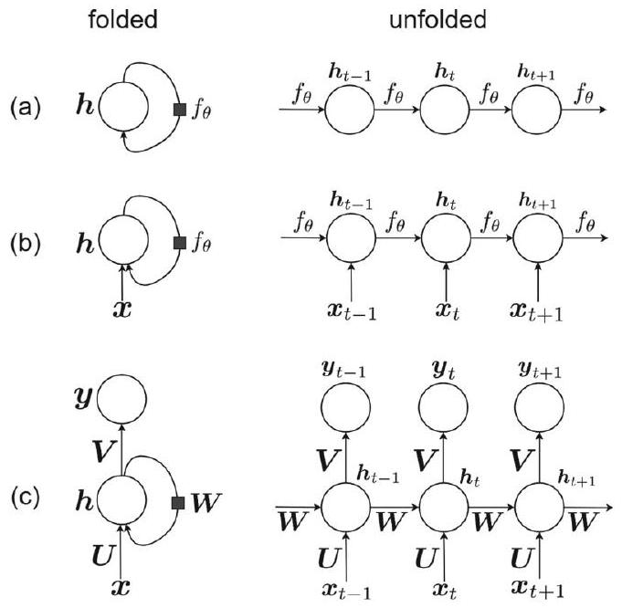
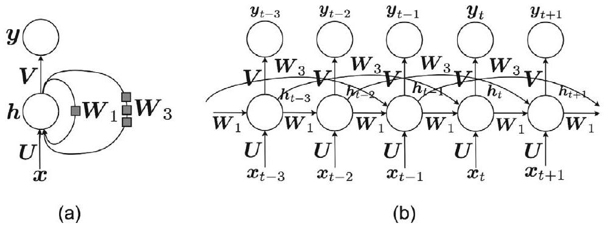
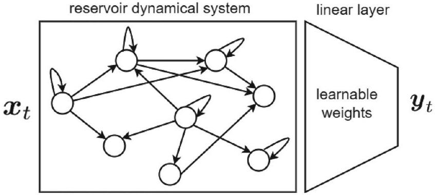
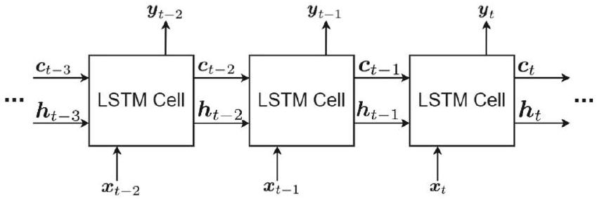
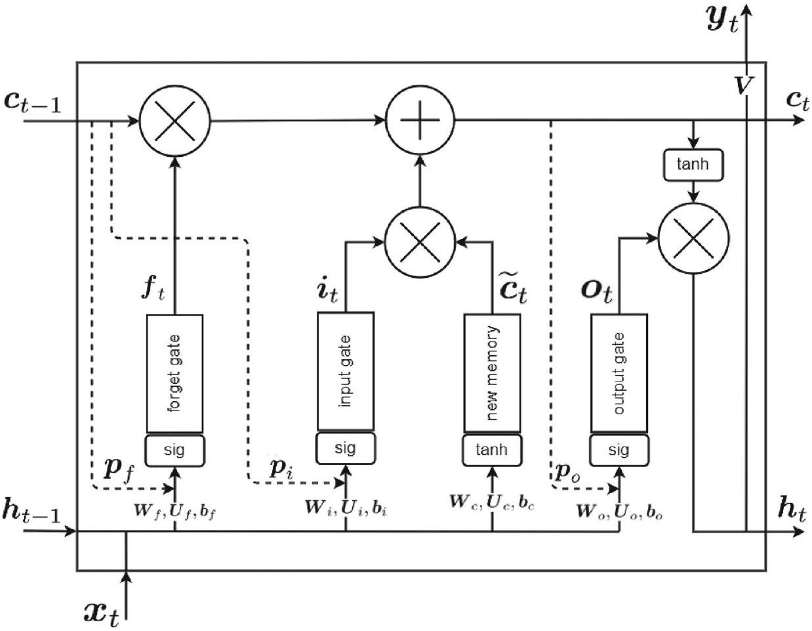
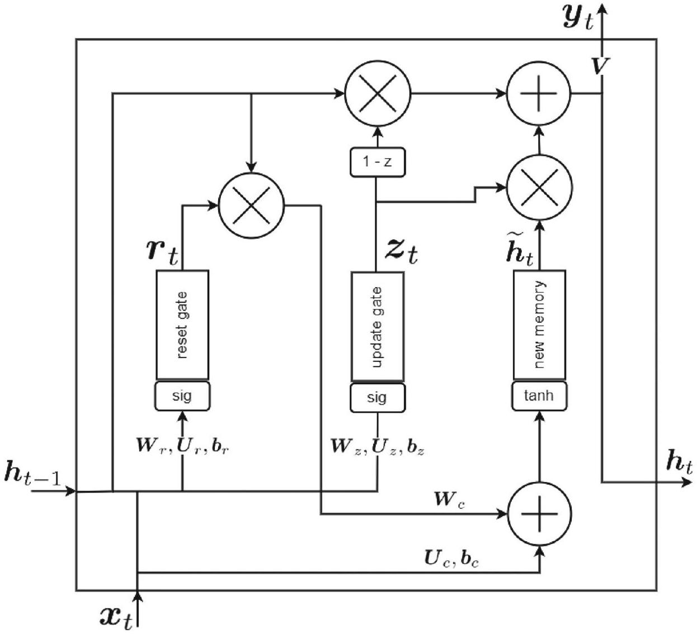
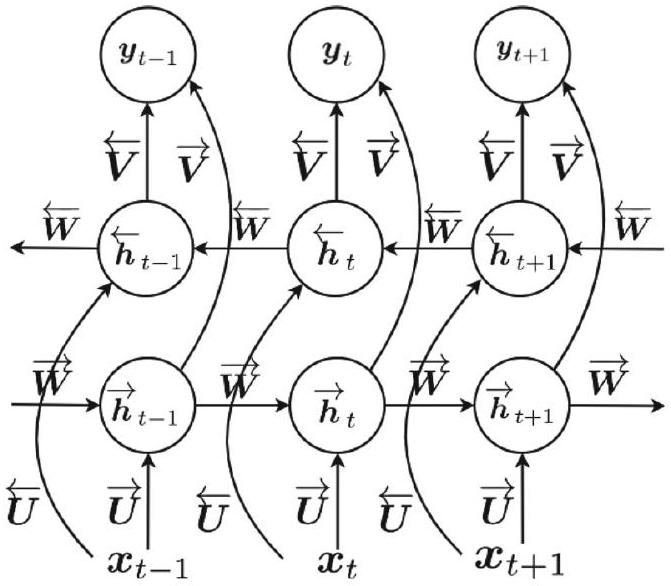
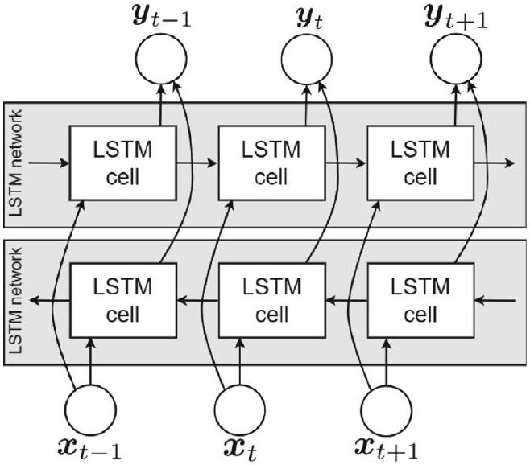
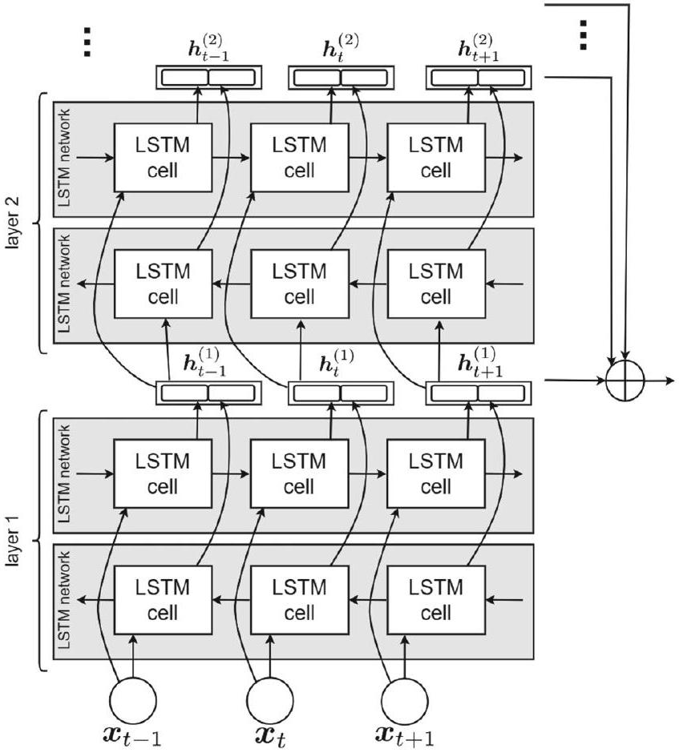

章節導覽 (TOC)
Chapter 08: 循環神經網絡與長短期記憶網絡
Recurrent Neural Networks (RNNs) and Long Short-Term Memory Networks (LSTMs). 本講義深入拆解序列建模、隨時間反向傳播 (BPTT)、梯度消失與爆炸機制、LSTM 與 GRU 門控架構，以及雙向處理與 ELMo 上下文表徵。
祕笈 教授祕笈：序列建模與循環神經網絡導論什麼是序列數據與循環神經網絡？
在傳統的前饋神經網絡（Feedforward Neural Networks, FNN）中，輸入數據被假設為獨立同分布（i.i.d.）。然而，在真實世界的許多應用中，數據是以時間序列 或順序結構 的形式出現的，例如自然語言句子（單詞序列）、語音訊號（音素序列）或股票價格變化。
前饋神經網絡無法有效處理變長序列，因為它們沒有「記憶」功能，無法將過去步驟的資訊傳遞到當前步驟。為了打破這個限制，循環神經網絡（Recurrent Neural Network, RNN） 應運而生。
為什麼傳統神經網絡無法處理序列數據？
考慮以下兩個句子：
「警察正在追捕小偷 。」（短距離依賴：警察與小偷在句子中位置相近）
「我出生在法國……經過許多年……所以我會說法語 。」（長距離依賴：法國與法語隔了很長的距離）
傳統神經網絡輸入維度固定，無法隨時間逐步累積上下文資訊。而 RNN 引入了動態狀態（State） 與循環回饋（Recurrence） ，讓網絡在 $t$ 時刻的輸出不僅取決於當前輸入 $x_t$，還受前一時刻狀態 $h_{t-1}$ 的影響。
怎麼記與怎麼用？
記憶口訣：「前饋無記憶，序列靠循環；歷史存隱藏，上下文相連。」
雖然現代 Transformer 與狀態空間模型（SSM，如 Mamba）在長序列上表現優異，但 RNN 的循環原理依然是理解序列建模與流式數據處理（Streaming Data）的基石。
🤖 AI 生圖可用：重繪此示意圖的提示詞（結構化）
WHAT: A side-by-side comparison diagram showing a Feedforward Neural Network (FNN) with independent single-step inputs vs a Recurrent Neural Network (RNN) with a recurrent state loop $h_t = \tanh(W h_{t-1} + U x_t)$.
WHY: Highlight why traditional FNNs fail on sequence data due to lack of historical context memory, whereas RNN maintains temporal continuity.
MUST show: (1) FNN processing isolated inputs without recurrence, (2) RNN state loop with weight matrix $W$ feeding back previous state $h_{t-1}$.
AVOID: Abstract unlabelled boxes without mathematical symbols.
STYLE: Clean scientific vector diagram, white background, distinct blue/yellow/green color scheme.
💡 自我檢測
為什麼傳統前饋神經網絡（FNN）不適合直接處理變長文字序列？
FNN 的權重無法更新 FNN 假設輸入獨立同分布，缺乏儲存歷史上下文的記憶機制與變長處理能力 FNN 無法使用反向傳播演算法 FNN 只支援複數運算
什麼是動態系統與參數共享？
經典動態系統（Dynamical System）是以遞迴關係定義的：
$$\boldsymbol{h}_{t} = f_{\theta}(\boldsymbol{h}_{t-1})$$
當系統包含外部輸入訊號 $\boldsymbol{x}_t$ 時，動態系統轉化為：
$$\boldsymbol{h}_{t} = f_{\theta}(\boldsymbol{h}_{t-1}, \boldsymbol{x}_{t})$$
隱藏狀態 $\boldsymbol{h}_t$ 充當了過去所有輸入與狀態序列的高維摘要（Summary）。
參數共享（Parameter Sharing）的核心意義
如果為序列中每個時間步 $t$ 都定義一套全新的函數 $f_{\theta_t}$，模型的參數量將隨序列長度暴增，且無法泛化到未見過的序列長度。RNN 的關鍵突破在於跨時間步共享同一組權重矩陣 ！
標準 RNN 的前向傳播公式如下：
$$\begin{align*}
\boldsymbol{i}_t &= \boldsymbol{W} \boldsymbol{h}_{t-1} + \boldsymbol{U} \boldsymbol{x}_t + \boldsymbol{b}_i \\
\boldsymbol{h}_t &= \tanh(\boldsymbol{i}_t) = \tanh(\boldsymbol{W} \boldsymbol{h}_{t-1} + \boldsymbol{U} \boldsymbol{x}_t + \boldsymbol{b}_i) \\
\boldsymbol{y}_t &= \boldsymbol{V} \boldsymbol{h}_t + \boldsymbol{b}_y
\end{align*}$$
其中：
$\boldsymbol{U} \in \mathbb{R}^{p \times d}$：輸入到隱藏層的權重矩陣。
$\boldsymbol{W} \in \mathbb{R}^{p \times p}$：隱藏層到隱藏層（狀態轉移）的權重矩陣。
$\boldsymbol{V} \in \mathbb{R}^{q \times p}$：隱藏層到輸出層的權重矩陣。
$\boldsymbol{b}_i, \boldsymbol{b}_y$：對應的偏置向量。
若輸出層需要機率分布（如分類任務），則使用 Softmax 函數：
$$\widehat{\boldsymbol{y}}_t = \operatorname{softmax}(\boldsymbol{y}_t) = \frac{\exp(y_{t,1})}{\sum_{j=1}^q \exp(y_{t,j})}$$
怎麼記與怎麼用？
記憶口訣：「U 接輸入，W 傳狀態，V 算輸出；權重跨時共享，百步不變。」

【教材原圖】Fig 1: The folded and unfolded structures of (a) dynamic system without input, (b) dynamical system with input, and (c) an RNN.
🤖 AI 生圖可用：重繪此示意圖的提示詞（結構化）
WHAT: An unrolled computational graph of a Recurrent Neural Network over time steps $t=1..4$.
WHY: Demonstrate the parameter sharing mechanism where identical weight matrices $(U, W, V)$ are reused across all time slots.
MUST show: (1) Time sequence nodes $x_t \to h_t \to \hat{y}_t$, (2) Horizontal recurrent state arrows labelled with shared weight matrix $W$, (3) Explicit label "Shared Parameters across Time".
AVOID: Different weight labels for different time steps.
STYLE: Modern flat vector infographic, clear arrow connections, white background.
🎮 互動展示 kp-2：RNN 前向傳播與狀態遞迴計算
【操作說明與正確理論基準】
這在做什麼： 展示標準 RNN 在時間步 $t=1..4$ 的前向傳播過程，說明隱藏狀態 $h_t = \tanh(W h_{t-1} + U x_t + b_i)$ 與輸出 $y_t = V h_t + b_y$ 的動態變化。
怎麼操作： 拖動下方滑桿調整狀態權重 $W$、輸入權重 $U$ 與當前輸入序列值 $x_t$。
觀察什麼： 隱藏狀態 $h_t$ 受到前一步狀態 $h_{t-1}$ 與當前輸入 $x_t$ 的共同作用，並被雙曲正切 $\tanh$ 壓縮在 $(-1, 1)$ 範圍內。
理論基準： 當 $h_{t-1}=0, x_t=1, U=1, b_i=0$ 時，前向輸入 $i_t=1.0$，狀態 $h_t = \tanh(1.0) \approx 0.7616$。
點擊或拉動滑桿計算數值...
祕笈 教授祕笈：動態系統與參數共享機制
💡 自我檢測
在標準 RNN 前向傳播公式中，權重矩陣 W 的主要作用是什麼？
將輸入映射到輸出空間 在時間步之間傳遞並轉移隱藏狀態 h_{t-1} 到 h_t 對輸出向量進行 Softmax 歸一化 計算即時損失
什麼是 BPTT 演算法與馬可夫假設？
訓練循環神經網絡的標準方法是隨時間反向傳播（Backpropagation Through Time, BPTT） 。BPTT 本質上是將展開後的 RNN 視為一個極深的廣義前向網絡，運用鏈鎖律（Chain Rule）進行梯度計算。
損失函數的定義與 $T$ 階馬可夫性質
在實際訓練中，將訓練起點至今的所有歷史全部納入計算是不切實際的。因此我們假設網絡具有 $T$ 階馬可夫性質（Markov Property） ，僅回溯過去的 $T$ 個時間步。總損失定義為各時間步損失的加總：
$$\mathcal{L} = \sum_{t=1}^{T} \mathcal{L}_t$$
其中 $\mathcal{L}_t$ 是第 $t$ 時間步的損失（例如交叉熵或均方誤差）。
需要優化的參數集合
BPTT 的目標是計算總損失 $\mathcal{L}$ 對模型所有可學習參數的偏微分（梯度）：
$$\left\{ \boldsymbol{V}, \boldsymbol{W}, \boldsymbol{U}, \boldsymbol{b}_i, \boldsymbol{b}_y \right\}$$
因為權重在所有時間步共享，梯度計算必須將每個時間步所產生的梯度貢獻累積相加！
怎麼記與怎麼用？
記憶口訣：「展開時間軸，總損等於各步和；梯度跨步傳，歷史參數一起算。」
🤖 AI 生圖可用：重繪此示意圖的提示詞（結構化）
WHAT: A timeline bar chart illustrating BPTT total loss aggregation $\mathcal{L} = \sum_{t=1}^T \mathcal{L}_t$ and $T$-order Markov unrolling truncation window.
WHY: Explain how losses at each time step sum together to form the global optimization objective under backpropagation through time.
MUST show: (1) Stepwise loss bars $\mathcal{L}_1, \mathcal{L}_2, \dots, \mathcal{L}_T$, (2) Cumulative loss curve overlay, (3) Truncation window boundary $T$.
AVOID: Unlabelled axes or missing summation formula.
STYLE: Quantitative educational bar plot, crisp typography, clean background.
🎮 互動展示 kp-3：BPTT 馬可夫窗口 T 與總損失累加
【操作說明與正確理論基準】
這在做什麼： 展示 BPTT 在截斷窗口 $T$ 內的單步損失累加 $\mathcal{L} = \sum_{t=1}^T \mathcal{L}_t$ 與計算複雜度。
怎麼操作： 調整馬可夫截斷窗口長度 $T$ (1 到 10)。
觀察什麼： 隨著時間步長 $T$ 增加，總損失 $\mathcal{L}$ 逐步累積，反向傳播的鏈鎖矩陣相乘次數呈線性增加。
理論基準： 假設單步平均損失 $\bar{\mathcal{L}} \approx 0.4$，若 $T=5$，總累積損失 $\mathcal{L} \approx 2.0$。
調整 T 值觀測計算...
祕笈 教授祕笈：隨時間反向傳播演算法（BPTT）總覽與損失函數
💡 自我檢測
在 BPTT 演算法中，為什麼總損失 L 對權重 W 的梯度需要對所有時間步 t 進行累加（summation）？
因為 W 是在所有時間步共享的同一個參數矩陣，根據多元微積分鏈鎖律必須累加每個時間步的貢獻 因為每個時間步的 W 都不一樣 為了防止梯度爆炸 這是高斯分布的要求
輸出層與隱藏狀態梯度的精密鏈鎖律推導
為了進行反向傳播，我們首先推導損失 $\mathcal{L}$ 對輸出 $\boldsymbol{y}_t$ 與隱藏狀態 $\boldsymbol{h}_t$ 的梯度。
1. 對輸出 $\boldsymbol{y}_t$ 的梯度
若無輸出激活函數，由鏈鎖律：
$$\frac{\partial \mathcal{L}}{\partial \boldsymbol{y}_t} = \frac{\partial \mathcal{L}_t}{\partial \boldsymbol{y}_t}$$
若有 Softmax 激活函數 $\widehat{\boldsymbol{y}}_t = \operatorname{softmax}(\boldsymbol{y}_t)$，則：
$$\frac{\partial \mathcal{L}}{\partial \boldsymbol{y}_t} = \frac{\partial \mathcal{L}_t}{\partial \widehat{\boldsymbol{y}}_t} \times \frac{\partial \widehat{\boldsymbol{y}}_t}{\partial \boldsymbol{y}_t}$$
2. 對隱藏狀態 $\boldsymbol{h}_t$ 的反向遞迴梯度 $\boldsymbol{\delta}_t$
關鍵洞察：改變 $\boldsymbol{h}_t$ 會同時影響當前輸出 $\boldsymbol{y}_t$ 與下一時刻狀態 $\boldsymbol{h}_{t+1}$ ！因此由多元鏈鎖律：
$$\boldsymbol{\delta}_t := \frac{\partial \mathcal{L}}{\partial \boldsymbol{h}_t} = \left( \frac{\partial \mathcal{L}}{\partial \boldsymbol{y}_t} \times \boldsymbol{V} \right) + \left( \boldsymbol{\delta}_{t+1} \times \frac{\partial \boldsymbol{h}_{t+1}}{\partial \boldsymbol{h}_t} \right)$$
其中狀態間轉移的雅可比矩陣為：
$$\frac{\partial \boldsymbol{h}_{t+1}}{\partial \boldsymbol{h}_t} = \boldsymbol{W} \operatorname{diag}\left( 1 - \boldsymbol{h}_{t+1}^2 \right)$$
對於最後一步 $t=T$，因為沒有未來的狀態，梯度簡化為：
$$\boldsymbol{\delta}_T = \frac{\partial \mathcal{L}_T}{\partial \boldsymbol{y}_T} \times \boldsymbol{V}$$
怎麼記與怎麼用？
記憶口訣：「當前輸出加未來，兩路梯度匯狀態；最後一步無未來，直取輸出乘以 V。」
🤖 AI 生圖可用：重繪此示意圖的提示詞（結構化）
WHAT: A reverse gradient flow diagram illustrating state error vector propagation $\boldsymbol{\delta}_t = \frac{\partial \mathcal{L}}{\partial \boldsymbol{y}_t} \boldsymbol{V} + \boldsymbol{\delta}_{t+1} \boldsymbol{W} (1 - \boldsymbol{h}_{t+1}^2)$.
WHY: Show how gradient at step $t$ receives contributions from both current step output and future state backpropagation.
MUST show: (1) Backward arrows $\boldsymbol{\delta}_{t+1} \to \boldsymbol{\delta}_t$, (2) Output error contribution $\frac{\partial \mathcal{L}_t}{\partial y_t} \boldsymbol{V}$, (3) Activation derivative multiplier $(1 - h_{t+1}^2)$.
AVOID: Forward arrows instead of backward error propagation.
STYLE: High-contrast technical diagram, color-coded gradient paths.
🎮 互動展示 kp-4：BPTT 隱藏狀態梯度 $\delta_t$ 反向傳播計算
【操作說明與正確理論基準】
這在做什麼： 計算時間步 $t$ 的狀態梯度 $\boldsymbol{\delta}_t = \frac{\partial \mathcal{L}_t}{\partial \boldsymbol{y}_t} \boldsymbol{V} + \boldsymbol{\delta}_{t+1} \boldsymbol{W} (1 - \boldsymbol{h}_{t+1}^2)$ 的反向遞迴。
怎麼操作： 調整權重 $W$ 與末端輸出誤差 $\frac{\partial \mathcal{L}_T}{\partial y_T}$。
觀察什麼： 梯度從末端 $T$ 倒流至 $t=1$，每一步乘上雅可比矩陣項 $W(1-h^2)$。
理論基準： 當 $W=0.5, V=1, h=0$ 時，每向前一步梯度乘以 0.5。
計算反向梯度中...
祕笈 教授祕笈：BPTT 梯度推導：輸出層與隱藏狀態梯度
💡 自我檢測
為什麼計算時間步 t 的隱藏狀態梯度 delta_t 時，公式包含兩項？
一項來自輸入 x_t，一項來自輸出 y_t 一項來自當前輸出 y_t 的影響，另一項來自下一時間步隱藏狀態 h_{t+1} 的反向回傳影響 一項是偏置 b_i，一項是偏置 b_y 為了計算正則化項
權重矩陣 V、W、U 的梯度推導與 Kronecker 積
得到了狀態梯度 $\boldsymbol{\delta}_t$ 後，我們進一步推導三大權重矩陣的總梯度。
1. 對隱藏至輸出矩陣 $\boldsymbol{V}$ 的梯度
矩陣 $\boldsymbol{V}$ 僅直接影響各步輸出 $\boldsymbol{y}_t = \boldsymbol{V} \boldsymbol{h}_t + \boldsymbol{b}_y$：
$$\frac{\partial \mathcal{L}}{\partial \boldsymbol{V}} = \sum_{t=1}^{T} \left( \frac{\partial \mathcal{L}_t}{\partial \boldsymbol{y}_t} \times \boldsymbol{h}_t^\top \right)$$
2. 對狀態轉移矩陣 $\boldsymbol{W}$ 與輸入矩陣 $\boldsymbol{U}$ 的梯度
使用 Magnus-Neudecker 矩陣微分法與 Kronecker 積（$\otimes$）：
$$\frac{\partial \boldsymbol{i}_t}{\partial \boldsymbol{W}} = \boldsymbol{h}_{t-1}^\top \otimes \boldsymbol{I}_{p \times p}, \quad \frac{\partial \boldsymbol{i}_t}{\partial \boldsymbol{U}} = \boldsymbol{x}_t^\top \otimes \boldsymbol{I}_{p \times p}$$
經由反向量化（$\operatorname{vec}^{-1}$）整理後得到總梯度：
$$\frac{\partial \mathcal{L}}{\partial \boldsymbol{W}} = \sum_{t=1}^{T} \operatorname{vec}^{-1}_{p \times p} \left( \left(\frac{\partial \boldsymbol{h}_t}{\partial \boldsymbol{W}}\right)^\top \boldsymbol{\delta}_t \right)$$
$$\frac{\partial \mathcal{L}}{\partial \boldsymbol{U}} = \sum_{t=1}^{T} \operatorname{vec}^{-1}_{p \times d} \left( \left(\frac{\partial \boldsymbol{h}_t}{\partial \boldsymbol{U}}\right)^\top \boldsymbol{\delta}_t \right)$$
怎麼記與怎麼用？
記憶口訣：「V 拿輸出乘狀態，W 與 U 靠克氏積；張量展開降維度，各步梯度總相加。」
🤖 AI 生圖可用：重繪此示意圖的提示詞（結構化）
WHAT: Matrix dimension and structure representation for weight matrix gradients $\frac{\partial \mathcal{L}}{\partial V}, \frac{\partial \mathcal{L}}{\partial W}, \frac{\partial \mathcal{L}}{\partial U}$ using Kronecker products $\otimes$.
WHY: Clarify how vectorization and Kronecker product mathematics transform sequence gradients into weight update matrices.
MUST show: (1) Dimension tags $q \times p$, $p \times p$, $p \times d$, (2) Vectorization operator $\operatorname{vec}^{-1}$, (3) Kronecker product symbol $\otimes$.
AVOID: Confusing dot products with Kronecker products.
STYLE: Mathematical vector schematic, structured box layout.
🎮 互動展示 kp-5：權重矩陣 $(V, W, U)$ 梯度累加與矩陣維度
【操作說明與正確理論基準】
這在做什麼： 展示 $\frac{\partial \mathcal{L}}{\partial V} = \sum \frac{\partial \mathcal{L}_t}{\partial y_t} h_t^\top$ 與包含 Kronecker 積的反向向量化梯度計算。
怎麼操作： 設定隱藏層維度 $p$ (2 到 8) 與輸入維度 $d$ (2 到 8)。
觀察什麼： 張量積展型與對應權重矩陣的維度變化。
理論基準： $\boldsymbol{V} \in \mathbb{R}^{q \times p}$、$\boldsymbol{W} \in \mathbb{R}^{p \times p}$、$\boldsymbol{U} \in \mathbb{R}^{p \times d}$。
維度計算中...
祕笈 教授祕笈：BPTT 權重矩陣梯度：V、W、U 的 Kronecker 積推導
💡 自我檢測
在計算隱藏到隱藏權重 W 的梯度時，為什麼會用到 Kronecker 積 (⊗)？
為了計算矩陣的逆矩陣 因為矩陣與向量求導時，將矩陣展開為向量處理（Vectorization），矩陣乘法求導自然產生 Kronecker 積結構 為了進行卷積運算 為了降低記憶體使用
偏置梯度與梯度下降參數更新法則
完成權重矩陣求導後，我們推導偏置項梯度並執行梯度下降更新。
1. 偏置向量 $\boldsymbol{b}_i$ 與 $\boldsymbol{b}_y$ 的梯度
$$\frac{\partial \mathcal{L}}{\partial \boldsymbol{b}_i} = \sum_{t=1}^{T} \left( \left( \frac{\partial \boldsymbol{h}_t}{\partial \boldsymbol{i}_t} \right)^\top \boldsymbol{\delta}_t \right) = \sum_{t=1}^{T} \operatorname{diag}\left(1 - \boldsymbol{h}_t^2\right) \boldsymbol{\delta}_t$$
$$\frac{\partial \mathcal{L}}{\partial \boldsymbol{b}_y} = \sum_{t=1}^{T} \frac{\partial \mathcal{L}_t}{\partial \boldsymbol{y}_t}$$
2. 梯度下降更新公式（Learning Rate $\eta > 0$）
$$\begin{align*}
\boldsymbol{W} &:= \boldsymbol{W} - \eta \frac{\partial \mathcal{L}}{\partial \boldsymbol{W}}, \quad \boldsymbol{U} := \boldsymbol{U} - \eta \frac{\partial \mathcal{L}}{\partial \boldsymbol{U}}, \quad \boldsymbol{V} := \boldsymbol{V} - \eta \frac{\partial \mathcal{L}}{\partial \boldsymbol{V}} \\
\boldsymbol{b}_i &:= \boldsymbol{b}_i - \eta \frac{\partial \mathcal{L}}{\partial \boldsymbol{b}_i}, \quad \boldsymbol{b}_y &:= \boldsymbol{b}_y - \eta \frac{\partial \mathcal{L}}{\partial \boldsymbol{b}_y}
\end{align*}$$
怎麼記與怎麼用？
記憶口訣：「偏置累加簡潔明，學習率乘梯度減；反向傳播全走過，參數煥然一新變。」
🤖 AI 生圖可用：重繪此示意圖的提示詞（結構化）
WHAT: A complete BPTT training epoch cycle diagram (Forward Pass $\to$ Total Loss Sum $\to$ BPTT Backpropagation $\to$ Gradient Descent Parameter Update).
WHY: Visualise the full closed-loop learning process of an RNN in a single training iteration.
MUST show: (1) Four sequential circular stages with arrows, (2) Gradient update rule $W := W - \eta \frac{\partial \mathcal{L}}{\partial W}$.
AVOID: Broken loops or missing update formulas.
STYLE: Sleek circular process flowchart, color-coded node stages.
🎮 互動展示 kp-6：完整 BPTT 訓練循環與權重更新
【操作說明與正確理論基準】
這在做什麼： 模擬完整 1-Step BPTT 前向與反向傳播，並使用梯度下降 $W := W - \eta \frac{\partial \mathcal{L}}{\partial W}$ 更新權重，觀察 Loss 收斂。
怎麼操作： 設定學習率 $\eta$，點擊「執行 1 次訓練迭代」按鈕。
觀察什麼： 每次迭代後損失下降，權重 $W$ 向最優解靠攏。
理論基準： 梯度的反方向為函數下降最快方向，適當學習率可確保損失二次收斂。
準備執行訓練...
祕笈 教授祕笈：BPTT 偏置梯度與梯度下降參數更新
💡 自我檢測
使用 BPTT 算完所有梯度後，梯度下降參數更新的符號方向為何是減號 (-)？
為了沿著梯度的反方向移動以最小化損失函數（Gradient Descent） 為了最大化準確率 這只是習慣寫法 因為學習率 eta 是負數
長距離依賴中的致命傷：梯度消失與爆炸
雖然 BPTT 理論完善，但在處理長序列時會面臨嚴重的數值不穩定性。考慮第 $T$ 步損失對早先第 $t$ 步狀態的梯度鏈：
$$\frac{\partial \boldsymbol{h}_T}{\partial \boldsymbol{h}_t} = \frac{\partial \boldsymbol{h}_T}{\partial \boldsymbol{h}_{T-1}} \times \frac{\partial \boldsymbol{h}_{T-1}}{\partial \boldsymbol{h}_{T-2}} \times \dots \times \frac{\partial \boldsymbol{h}_{t+1}}{\partial \boldsymbol{h}_t}$$
數值行為分析：指數級放大或衰減
梯度消失（Vanishing Gradient） ：若連乘項中的雅可比矩陣範數（Norm）小於 1，隨著時間跨度 $(T-t)$ 增大，梯度會呈指數級衰減趨近於 0 。網絡無法學習遠古歷史與當前的關聯，失去長距離記憶能力。梯度爆炸（Exploding Gradient） ：若雅可比矩陣範數大於 1，梯度會呈指數級暴增趨近於無窮大（NaN/Inf） ，導致數值崩潰與模型訓練發散。
為什麼梯度消失比爆炸更常見？
因為激活函數 $\tanh$ 的導數範圍在 $(0, 1]$，加上權重初始化若偏小，連乘項極易小於 1。梯度爆炸可透過梯度裁剪（Gradient Clipping） 輕易解決，但梯度消失則需要結構上的根本革新！
怎麼記與怎麼用？
記憶口訣：「連乘效應最驚人，小於一消失大於一爆；歷史太遠傳不到，傳統 RNN 難長記。」
🤖 AI 生圖可用：重繪此示意圖的提示詞（結構化）
WHAT: A logarithmic plot comparing gradient norm decay vs explosion across time distance $k = (T - t)$ for eigenvalue magnitude $\gamma < 1$, $\gamma = 1$, $\gamma > 1$.
WHY: Emphasise the catastrophic nature of vanishing gradients ($\gamma^k \to 0$) in capturing long-term dependencies compared to exploding gradients ($\gamma^k \to \infty$).
MUST show: (1) Exponential decay curve plunging to zero, (2) Exponential explosion curve shooting up, (3) Stable line $\gamma = 1$.
AVOID: Linear scale plots where exponential decay is hard to read.
STYLE: Scientific line chart, semi-logarithmic scale, clear annotations.
🎮 互動展示 kp-7：梯度消失與爆炸 $\gamma^k$ 數值變化模擬器
【操作說明與正確理論基準】
這在做什麼： 計算雅可比矩陣乘數 $\gamma$ 在時間跨度 $k=0..20$ 下的指數衰減與爆炸 $\gamma^k$。
怎麼操作： 調整乘數 $\gamma$ (0.5 到 1.4)。
觀察什麼： $\gamma < 1$ 時梯度迅速歸零（消失），$\gamma > 1$ 時梯度呈指數爆炸。
理論基準： 當 $\gamma = 0.8, k=20$ 時，$\gamma^{20} \approx 0.0038$（信號消失）。當 $\gamma = 1.2, k=20$ 時，$\gamma^{20} \approx 38.33$（信號爆炸）。
計算中...
祕笈 教授祕笈：長距離依賴中的梯度消失與爆炸問題
💡 自我檢測
在長序列訓練中，為什麼梯度消失（Vanishing Gradient）比梯度爆炸更難用簡單技巧解決？
因為梯度爆炸可以用簡單的梯度裁剪（Clipping）截斷，但梯度消失意味著歷史訊息的梯度信號徹底歸零，無法重新補回 因為梯度消失會導致 CPU 燒毀 因為梯度消失無法用浮點數表示 因為梯度爆炸不會發生
緩解梯度問題的早期結構創新：特徵值與長延遲
為了克服梯度消失/爆炸，研究人員提出了多種結構調節策略。
1. 趨近單位矩陣初始化（Close-to-Identity Weight Matrix）
對權重矩陣 $\boldsymbol{W}$ 進行特徵值分解 $\boldsymbol{W} = \boldsymbol{A} \boldsymbol{\Lambda} \boldsymbol{A}^\top$，特徵值 $\lambda$ 的大小決定了狀態變化的命運：
$\lambda < 1$：狀態變化按 $\lambda^t$ 呈收縮性（Contractive），遠古記憶被忘卻。建議選擇 $\lambda \lesssim 1$（略小於 1）的正交矩陣初始化。
結構修改：直接將前一狀態複製加入（Overcoming Vanishing Gradient）：
$$\boldsymbol{h}_t = \tanh\left( (\boldsymbol{W} + \boldsymbol{I}) \boldsymbol{h}_{t-1} + \boldsymbol{U} \boldsymbol{x}_t + \boldsymbol{b}_i \right)$$
強加單位矩陣 $\boldsymbol{I}$ 強化了對角線，使特徵值靠近 1，為梯度提供了直接穿透的恆等通道！
2. 長延遲連線（Long Delays / Skip Connections）
引入 $k$ 步延遲連線（如 1 步與 3 步延遲）：
$$\boldsymbol{h}_t = \tanh\left( \boldsymbol{W}_1 \boldsymbol{h}_{t-1} + \boldsymbol{W}_3 \boldsymbol{h}_{t-3} + \boldsymbol{U} \boldsymbol{x}_t + \boldsymbol{b}_i \right)$$
這允許梯度在反向傳播時跳過中間節點直接回傳，大幅縮短了連乘鏈長度。
怎麼記與怎麼用？
記憶口訣：「加 I 穿透恆等通道，長延遲開闢梯度捷徑；特徵值控制在波幅一，遠古資訊不流失。」

【教材原圖】Fig 2: The (a) folded and (b) unfolded structures of an RNN with long delays.
🤖 AI 生圖可用：重繪此示意圖的提示詞（結構化）
WHAT: Structural architectural comparison between standard 1-step RNN vs Identity-regularized $(W+I)$ RNN vs 3-step long delay skip connections $W_3$.
WHY: Demonstrate how identity shortcut connections and skip delays open direct gradient highways that bypass intermediate multiplicative decay.
MUST show: (1) Identity self-connection $(W+I)$, (2) Skip connection arrow spanning across 3 time steps, (3) Gradient flow bypass.
AVOID: Cluttered unlabelled connections.
STYLE: Minimalist network diagram, bright highlight arrows for skip paths.
🎮 互動展示 kp-8：(W+I) 恆等通道與長延遲 Skip 梯度捷徑對比
【操作說明與正確理論基準】
這在做什麼： 對比標準 RNN ($W^T$)、強加單位矩陣 ($(W+I)^T$) 與 3-步長延遲 ($W_3$) 的梯度傳遞衰減率。
怎麼操作： 拖動時間步數 $T$ (1 到 25)。
觀察什麼： 加上單位矩陣 $I$ 後，對角線得到強化，特徵值接近 1，梯度保持平穩不衰減。
理論基準： 傳統 $0.8^{20} \approx 0.003$；恆等通道 $(0.8-0.9+1.0)^{20} \approx (0.9)^{20} \approx 0.121$。
比較中...
祕笈 教授祕笈：緩解梯度問題：特徵值分析、趨近單位矩陣與長延遲連線
💡 自我檢測
將 RNN 隱藏狀態更新修改為 h_t = tanh((W + I)h_{t-1} + Ux_t + b_i) 的主要目的是什麼？
減少矩陣乘法運算量 引入單位矩陣 I 強化對角線，保持特徵值接近 1，防止梯度隨時間衰減歸零 將輸出限制在 0 與 1 之間 消除對輸入 x_t 的依賴
滲漏單元（Leaky Units）與迴聲狀態網絡（ESN）
1. 滲漏單元（Leaky Units）
滲漏單元透過時間常數 $\tau_j \ge 1$ 來控制每個狀態維度的衰減率：
$$h_{t,j} = \left(1 - \frac{1}{\tau_j}\right) h_{t-1,j} + \frac{1}{\tau_j} \tanh\left( \boldsymbol{W}_{j:} \boldsymbol{h}_{t-1} + \boldsymbol{U}_{j:} \boldsymbol{x}_t + b_{i,j} \right)$$
當 $\tau_j = 1$ 時，還原為標準 RNN。
當 $\tau_j \gg 1$ 時，$h_{t,j} \approx h_{t-1,j}$，歷史狀態被長久保存。
網絡可針對不同維度獨立學習記憶保持率，是 LSTM 門控機制的直接前身！
2. 迴聲狀態網絡（Echo State Networks, ESN）
ESN 採用了極具創意的「儲水池計算（Reservoir Computing）」概念：
將循環隱藏層作為一個固定、隨機且稀疏連接的儲水池（Reservoir） 。
儲水池內部的權重矩陣固定不訓練 ，完全避免了 BPTT 的梯度消失問題！僅訓練線性輸出層的權重 $\boldsymbol{V}$（只需解簡單的線性回歸求解）。
怎麼記與怎麼用？
記憶口訣：「滲漏單元平滑記，時間常數保長遠；迴聲網路儲水池，內部固定只練輸出。」

【教材原圖】Fig 3: The echo state network architecture.
🤖 AI 生圖可用：重繪此示意圖的提示詞（結構化）
WHAT: A two-panel diagram comparing Leaky Units state decay time constant $\tau$ curves vs Echo State Network (ESN) fixed reservoir architecture.
WHY: Illustrate how Leaky Units dynamically control decay rates while ESN uses a fixed random reservoir to bypass BPTT.
MUST show: (1) Exponential decay curves for $\tau=1, 3, 10$, (2) ESN fixed sparse reservoir graph with trainable linear output weights $V$.
AVOID: Mixing up trainable weights with fixed reservoir weights.
STYLE: Dual-panel educational graphic, clean scientific layout.
🎮 互動展示 kp-9：滲漏單元 (Leaky Units) 時間常數 $\tau$ 動態模擬
【操作說明與正確理論基準】
這在做什麼： 展示 $h_{t,j} = (1 - \frac{1}{\tau_j}) h_{t-1,j} + \frac{1}{\tau_j} \tilde{h}_{t,j}$ 中時間常數 $\tau_j$ 對歷史記憶保留的影響。
怎麼操作： 調整時間常數 $\tau$ (1 到 20)。
觀察什麼： $\tau=1$ 時為標準短記憶 RNN；$\tau$ 越大，狀態越傾向直接複製歷史 $h_{t-1}$。
理論基準： 脈衝訊號傳入後，$\tau=10$ 的狀態半衰期為 $\tau \ln(2) \approx 6.9$ 個時間步。
計算滲漏反應中...
祕笈 教授祕笈：滲漏單元（Leaky Units）與迴聲狀態網路（Echo State Networks）
💡 自我檢測
迴聲狀態網絡（Echo State Network, ESN）如何徹底避免 BPTT 的梯度消失問題？
使用非常大的學習率 將循環儲水池（Reservoir）內部的權重固定不訓練，僅訓練最後的線性輸出層 將所有激活函數換成 ReLU 完全不用矩陣運算
長短期記憶網路（LSTM）門控機制：三大門的作用與算式
為了徹底解決梯度消失，Hochreiter 與 Schmidhuber 提出了 LSTM（Long Short-Term Memory） 。LSTM 的核心創新是引入了三種控制資訊流動的門控（Gates） 。
三大門的精確數學定義（含 Peephole 窺視孔連線）
輸入門（Input Gate $\boldsymbol{i}_t$） ：決定多少新資訊可以寫入記憶：
$$\boldsymbol{i}_t = \operatorname{sig}\left( \boldsymbol{W}_i \boldsymbol{h}_{t-1} + \boldsymbol{U}_i \boldsymbol{x}_t + (\boldsymbol{p}_i \odot \boldsymbol{c}_{t-1}) + \boldsymbol{b}_i \right)$$遺忘門（Forget Gate $\boldsymbol{f}_t$） ：決定多少舊細胞記憶 $\boldsymbol{c}_{t-1}$ 需要保留：
$$\boldsymbol{f}_t = \operatorname{sig}\left( \boldsymbol{W}_f \boldsymbol{h}_{t-1} + \boldsymbol{U}_f \boldsymbol{x}_t + (\boldsymbol{p}_f \odot \boldsymbol{c}_{t-1}) + \boldsymbol{b}_f \right)$$輸出門（Output Gate $\boldsymbol{o}_t$） ：決定多少細胞記憶可以輸出到隱藏狀態 $\boldsymbol{h}_t$：
$$\boldsymbol{o}_t = \operatorname{sig}\left( \boldsymbol{W}_o \boldsymbol{h}_{t-1} + \boldsymbol{U}_o \boldsymbol{x}_t + (\boldsymbol{p}_o \odot \boldsymbol{c}_t) + \boldsymbol{b}_o \right)$$
其中 $\operatorname{sig}(x) = \frac{1}{1 + e^{-x}} \in (0, 1)$，$\boldsymbol{p}_i, \boldsymbol{p}_f, \boldsymbol{p}_o$ 為窺視孔權重（Peepholes）。
怎麼記與怎麼用？
記憶口訣：「Sigmoid 輸出零到一，控開控關最靈巧；遺忘選留舊記憶，輸入決定新資訊，輸出關照當前態。」

【教材原圖】Fig 4: A sequence of LSTM cells processing the input sequence.
🤖 AI 生圖可用：重繪此示意圖的提示詞（結構化）
WHAT: A plot of the Sigmoid activation function $\operatorname{sig}(z) = \frac{1}{1 + e^{-z}}$ showing its 0 to 1 gating ratio behavior for Input ($i_t$), Forget ($f_t$), and Output ($o_t$) gates.
WHY: Explain why Sigmoid is chosen for gate control (0 = fully closed, 1 = fully open).
MUST show: (1) Sigmoid S-curve, (2) Highlighted 0-closed region and 1-open region, (3) Labels for input, forget, output gates.
AVOID: Plotting Tanh instead of Sigmoid.
STYLE: High-precision function curve, clear color-coded shading.
🎮 互動展示 kp-10：LSTM 輸入門 $i_t$、遺忘門 $f_t$、輸出門 $o_t$ 計算器
【操作說明與正確理論基準】
這在做什麼： 輸入 $x_t$ 與前一狀態 $h_{t-1}$，即時計算三大 Sigmoid 門控開關比例。
怎麼操作： 調整當前輸入 $x_t$ 與前一隱藏狀態 $h_{t-1}$。
觀察什麼： 門控比例在 0 (完全關閉) 到 1 (完全開啟) 之間動態調節。
理論基準： $\boldsymbol{f}_t = \operatorname{sig}(W_f h_{t-1} + U_f x_t + b_f)$。
計算門控比例中...
祕笈 教授祕笈：長短期記憶網路（LSTM）門控機制：輸入門、遺忘門與輸出門
💡 自我檢測
LSTM 中三大門（Input, Forget, Output Gates）使用 Sigmoid 激活函數的主要原因是什麼？
Sigmoid 輸出在 0 到 1 之間，正好充當開關比例（0 代表完全關閉，1 代表完全開啟） Sigmoid 計算速度比 tanh 快 Sigmoid 導數永遠大於 1 為了讓輸出變成負數
LSTM 細胞狀態傳送帶、隱藏狀態與最終輸出
1. 新候選記憶（Block Input $\widetilde{\boldsymbol{c}}_t$）
$$\widetilde{\boldsymbol{c}}_t = \tanh\left( \boldsymbol{W}_c \boldsymbol{h}_{t-1} + \boldsymbol{U}_c \boldsymbol{x}_t + \boldsymbol{b}_c \right)$$
2. 最終細胞狀態更新（Conveyor Belt $\boldsymbol{c}_t$）——核心方程式
$$\boldsymbol{c}_t = \left(\boldsymbol{f}_t \odot \boldsymbol{c}_{t-1}\right) + \left(\boldsymbol{i}_t \odot \widetilde{\boldsymbol{c}}_t\right)$$
為何這能解決梯度消失？ 常數誤差流（Constant Error Carousel, CEC） ！
3. 隱藏狀態（Block Output $\boldsymbol{h}_t$）與輸出 $\boldsymbol{y}_t$
$$\boldsymbol{h}_t = \boldsymbol{o}_t \odot \tanh(\boldsymbol{c}_t)$$
$$\boldsymbol{y}_t = \boldsymbol{V} \boldsymbol{h}_t + \boldsymbol{b}_y$$
怎麼記與怎麼用？
記憶口訣：「細胞狀態傳送帶，加法更新梯度暢；遺忘乘以舊記憶，輸入乘以新候選，輸出再由門控定。」

【教材原圖】Fig 5: The conveyor belt in the LSTM cell.
🤖 AI 生圖可用：重繪此示意圖的提示詞（結構化）
WHAT: The conveyor belt mechanism of an LSTM cell state $c_t = (f_t \odot c_{t-1}) + (i_t \odot \widetilde{c}_t)$ and output gate projection $h_t = o_t \odot \tanh(c_t)$.
WHY: Reveal how Constant Error Carousel (CEC) allows linear additive cell state updates without multiplicative gradient decay.
MUST show: (1) Main top conveyor belt line $c_{t-1} \to c_t$, (2) Multiplicative forget gate $\odot f_t$, (3) Additive input gate $+ (i_t \odot \widetilde{c}_t)$, (4) Output state branch $h_t$.
AVOID: Confusing cell state $c_t$ with hidden state $h_t$.
STYLE: Detailed architectural flow diagram, standard LSTM schematic coloring.
🎮 互動展示 kp-11：LSTM 細胞狀態傳送帶 $c_t$ 與隱藏狀態 $h_t$ 演化
【操作說明與正確理論基準】
這在做什麼： 模擬 $c_t = f_t \odot c_{t-1} + i_t \odot \widetilde{c}_t$ 與 $h_t = o_t \odot \tanh(c_t)$ 在 5 個時間步內的演化。
怎麼操作： 調整遺忘門放行率 $f_t$ 與輸入門放行率 $i_t$。
觀察什麼： 高遺忘門 $f_t \approx 1$ 時細胞狀態 $c_t$ 能無衰減長久保持（CEC 常數誤差流）。
理論基準： 若 $f_t=1, i_t=0$，則 $c_t = c_{t-1}$（狀態絕對保留）。
模擬細胞狀態中...
祕笈 教授祕笈：LSTM 細胞狀態更新、隱藏狀態與輸出計算
💡 自我檢測
LSTM 的細胞狀態更新公式 c_t = f_t ⊙ c_{t-1} + i_t ⊙ c~_t 為何能創造「常數誤差流（CEC）」？
因為更新公式包含加法結構，當遺忘門 f_t 接近 1 時，反向傳播的梯度能無衰減地沿加法路徑跨越長時間步傳遞 因為它使用了矩陣求逆 因為它不需要反向傳播 因為它把所有權重設為 0
LSTM 的演進歷史與重要變體
LSTM 自 1997 年提出以來，經歷了數次重大演進：
1. 原始 LSTM（Original LSTM, Hochreiter & Schmidhuber 1997）
僅包含輸入門 與輸出門 ，沒有遺忘門 也沒有窺視孔（Peepholes）。由於缺乏遺忘門，細胞狀態會在長序列中無限累積，導致數值飽和。
2. Gers 遺忘門與窺視孔（Gers et al. 2000）
引入遺忘門 $\boldsymbol{f}_t$ （允許主動清空舊狀態）與窺視孔連線（Peepholes） （讓門控能直接觀察細胞狀態 $\boldsymbol{c}_{t-1}$）。
3. 香草 LSTM（Vanilla LSTM, Graves & Schmidhuber 2005）
現代最常用的標準 LSTM 架構。結合了遺忘門、窺視孔與完整的 BPTT 訓練演算法。其門控公式（無窺視孔簡化版）為：
$$\begin{align*}
\boldsymbol{i}_t &= \operatorname{sig}(\boldsymbol{W}_i \boldsymbol{h}_{t-1} + \boldsymbol{U}_i \boldsymbol{x}_t + \boldsymbol{b}_i) \\
\boldsymbol{f}_t &= \operatorname{sig}(\boldsymbol{W}_f \boldsymbol{h}_{t-1} + \boldsymbol{U}_f \boldsymbol{x}_t + \boldsymbol{b}_f) \\
\boldsymbol{o}_t &= \operatorname{sig}(\boldsymbol{W}_o \boldsymbol{h}_{t-1} + \boldsymbol{U}_o \boldsymbol{x}_t + \boldsymbol{b}_o)
\end{align*}$$
4. 全門控循環（Full Gate Recurrence）與投影 LSTM（LSTM with Projection）
讓門控之間互相連接，或在隱藏層輸出前加入線性投影層以降低參數量。
怎麼記與怎麼用？
記憶口訣：「原始無遺忘易飽和，Gers 加入遺忘門；香草標準最流行，窺視孔連細胞心。」
🤖 AI 生圖可用：重繪此示意圖的提示詞（結構化）
WHAT: A chronological evolution timeline of LSTM architectures (Original 1997 $\to$ Gers Forget Gate 2000 $\to$ Vanilla 2005 $\to$ GRU/MGU 2014-2017).
WHY: Trace the historical progression of recurrent gating mechanisms solving memory accumulation and complexity challenges.
MUST show: (1) Four milestone blocks along a horizontal timeline, (2) Key architectural additions at each milestone (e.g. $+f_t$, $+$Peepholes, $+BPTT$).
AVOID: Out of order historical dates.
STYLE: Clean roadmap timeline, milestone card layout.
🎮 互動展示 kp-12：Original vs Vanilla vs Peephole LSTM 變體對比
【操作說明與正確理論基準】
這在做什麼： 對比 1997 原始 LSTM（無遺忘門，狀態單調累積）、2005 香草 LSTM（含遺忘門）與窺視孔 LSTM 在長序列上的記憶動態。
怎麼操作： 選擇不同 LSTM 變體與序列長度 $N$。
觀察什麼： 原始 LSTM 因缺乏遺忘門 $f_t$，細胞狀態 $c_t$ 易飽和飆升；Vanilla LSTM 具備自我重置能力。
理論基準： Original LSTM: $c_t = c_{t-1} + i_t ilde{c}_t$（單調無衰減累積）。
選擇 LSTM 變體:
1997 原始 LSTM (無遺忘門)
2005 香草 Vanilla LSTM (含遺忘門)
窺視孔 Peephole LSTM
切換變體觀測...
祕笈 教授祕笈：LSTM 的演進歷史與變體（Original, Vanilla, Peephole）
💡 自我檢測
Gers 等人在 2000 年為原始 LSTM 引入「遺忘門（Forget Gate）」的主要歷史原因是什麼？
原始 LSTM 缺乏清空記憶的機制，處理長序列時細胞狀態會無限制累積導致飽和與失真 為了減少計算量 因為原始 LSTM 無法處理圖像 為了替換 Softmax
門控循環單元（GRU）：完全門控單元架構
2014 年 Cho 等人提出了 Gated Recurrent Unit（GRU） 。GRU 的哲學是：簡化 LSTM 複雜度，同時保持同等的序列建模能力 。
GRU 完全門控單元的四大算式
重置門（Reset Gate $\boldsymbol{r}_t$） ：控制前一狀態 $\boldsymbol{h}_{t-1}$ 有多少被用於計算新候選：
$$\boldsymbol{r}_t = \operatorname{sig}\left( \boldsymbol{W}_r \boldsymbol{h}_{t-1} + \boldsymbol{U}_r \boldsymbol{x}_t + \boldsymbol{b}_r \right)$$更新門（Update Gate $\boldsymbol{z}_t$） ：同時兼具 LSTM 輸入門與遺忘門的功能：
$$\boldsymbol{z}_t = \operatorname{sig}\left( \boldsymbol{W}_z \boldsymbol{h}_{t-1} + \boldsymbol{U}_z \boldsymbol{x}_t + \boldsymbol{b}_z \right)$$新候選隱藏狀態（Candidate State $\widetilde{\boldsymbol{h}}_t$） ：
$$\widetilde{\boldsymbol{h}}_t = \tanh\left( \boldsymbol{W}_c (\boldsymbol{r}_t \odot \boldsymbol{h}_{t-1}) + \boldsymbol{U}_c \boldsymbol{x}_t + \boldsymbol{b}_c \right)$$最終隱藏狀態（Final State $\boldsymbol{h}_t$） ：舊狀態與新候選的凸組合（Convex Combination）：
$$\boldsymbol{h}_t = \left( (\mathbf{1} - \boldsymbol{z}_t) \odot \boldsymbol{h}_{t-1} \right) + \left( \boldsymbol{z}_t \odot \widetilde{\boldsymbol{h}}_t \right)$$
GRU vs LSTM 關鍵對比
GRU 將 LSTM 的細胞狀態 $\boldsymbol{c}_t$ 與隱藏狀態 $\boldsymbol{h}_t$ 合二為一，門控數量從 3 個降為 2 個（矩陣參數減少 25%），計算更快且表現相當！
怎麼記與怎麼用？
記憶口訣：「GRU 精簡兩門控，更新重置好配合；無單獨細胞狀態，凸組合轉新舊態。」

【教材原圖】Fig 6: The conveyor belt in the GRU cell (the fully gated unit).
🤖 AI 生圖可用：重繪此示意圖的提示詞（結構化）
WHAT: A structural block diagram of the GRU Fully Gated Unit featuring Reset Gate $r_t$, Update Gate $z_t$, Candidate State $\widetilde{h}_t$, and Final State $h_t = (1-z_t) \odot h_{t-1} + z_t \odot \widetilde{h}_t$.
WHY: Explain how GRU simplifies LSTM by merging cell and hidden states into a single hidden state $h_t$ with 2 gates.
MUST show: (1) Reset gate $r_t$ modulating $h_{t-1}$, (2) Update gate $z_t$ performing convex interpolation $(1-z_t) h_{t-1} + z_t \widetilde{h}_t$.
AVOID: Showing 3 gates or separate cell state $c_t$.
STYLE: Crisp block diagram, standardized GRU color scheme.
🎮 互動展示 kp-13：GRU 重置門 $r_t$ 與更新門 $z_t$ 凸組合計算
【操作說明與正確理論基準】
這在做什麼： 即時計算 GRU 重置門 $r_t$、更新門 $z_t$ 與最終隱藏狀態 $h_t = (1-z_t) h_{t-1} + z_t \widetilde{h}_t$。
怎麼操作： 調整重置門 $r_t$ 與更新門 $z_t$ 的開關比例。
觀察什麼： 更新門 $z_t$ 在舊狀態 $h_{t-1}$ 與新候選 $\widetilde{h}_t$ 之間進行凸組合分配。
理論基準： 當 $z_t=1$ 時，$h_t = \widetilde{h}_t$（完全更新為新候選）。當 $z_t=0$ 時，$h_t = h_{t-1}$（完全保留舊狀態）。
計算中...
祕笈 教授祕笈：門控循環單元（GRU）：完全門控單元架構
💡 自我檢測
相較於 LSTM，GRU 在結構上的主要精簡特徵是什麼？
完全不需要激活函數 將細胞狀態 c_t 與隱藏狀態 h_t 合併，並將門控減少為重置門（r_t）與更新門（z_t）兩個 取消了所有偏置項 只能處理單步序列
極簡門控單元（Minimal Gated Unit, MGU）
2017 年 Heck & Salem 提出了進一步精簡的 Minimal Gated Unit（MGU） ，探索門控機制的極限。
MGU 算式：將重置門與更新門合併為單一門
MGU 僅保留一個遺忘門 $\boldsymbol{f}_t$ ，同時控制舊狀態忘卻與新資訊融合：
$$\begin{align*}
\boldsymbol{f}_t &= \operatorname{sig}\left( \boldsymbol{W}_f \boldsymbol{h}_{t-1} + \boldsymbol{U}_f \boldsymbol{x}_t + \boldsymbol{b}_f \right) \\
\widetilde{\boldsymbol{h}}_t &= \tanh\left( \boldsymbol{W}_c (\boldsymbol{f}_t \odot \boldsymbol{h}_{t-1}) + \boldsymbol{U}_c \boldsymbol{x}_t + \boldsymbol{b}_c \right) \\
\boldsymbol{h}_t &= \left( (\mathbf{1} - \boldsymbol{f}_t) \odot \boldsymbol{h}_{t-1} \right) + \left( \boldsymbol{f}_t \odot \widetilde{\boldsymbol{h}}_t \right)
\end{align*}$$
三種門控網絡的參數複雜度對比
架構
門控數量
狀態表示
矩陣參數個數（隱藏維度 $p$, 輸入維度 $d$）
LSTM 3 個門 + 1 個候選
$c_t$ 與 $h_t$ 雙狀態
$4 \times (p^2 + pd + p)$
GRU 2 個門 + 1 個候選
僅 $h_t$ 單狀態
$3 \times (p^2 + pd + p)$
MGU 1 個門 + 1 個候選
僅 $h_t$ 單狀態
$2 \times (p^2 + pd + p)$
怎麼記與怎麼用？
記憶口訣：「MGU 極簡極致，單一遺忘門控全；參數減半輕量化，邊緣計算好幫手。」
🤖 AI 生圖可用：重繪此示意圖的提示詞（結構化）
WHAT: A horizontal bar chart comparing parameter counts and gate numbers between LSTM (3 gates, 2 states), GRU (2 gates, 1 state), and Minimal Gated Unit MGU (1 gate, 1 state).
WHY: Highlight the progressive reduction in computational complexity and parameter overhead ($4 \times$ vs $3 \times$ vs $2 \times (p^2 + pd + p)$).
MUST show: (1) Bar chart of parameter counts for $p=d=128$, (2) Exact parameter numbers, (3) Gate count labels.
AVOID: Missing parameter formulas.
STYLE: Modern horizontal bar chart, contrasting color palette.
🎮 互動展示 kp-14：MGU vs GRU vs LSTM 參數量與記憶體計算器
【操作說明與正確理論基準】
這在做什麼： 計算給定隱藏層維度 $p$ 與輸入維度 $d$ 下，三種網路的精確參數量。
怎麼操作： 調整隱藏層維度 $p$ 與輸入維度 $d$。
觀察什麼： MGU 只有 1 個門控，矩陣參數量比 GRU 減少 33%，比 LSTM 減少 50%！
理論基準： LSTM: $4(p^2 + pd + p)$；GRU: $3(p^2 + pd + p)$；MGU: $2(p^2 + pd + p)$。
計算參數量中...
祕笈 教授祕笈：極簡門控單元（Minimal Gated Unit, MGU）
💡 自我檢測
極簡門控單元（MGU）相比於 GRU，參數數量進一步減少了多少比例？
矩陣參數從 3 組減少到 2 組（減少約 33% 的權重參數） 減少了 90% 沒有減少 增加了 50%
雙向處理的合理性與雙向 RNN (Bidirectional RNN)
1. 雙向處理（Bidirectional Processing）的合理性
在傳統因果（Causal）模型中，序列只能從左到右單向處理。然而，在許多非流式（Offline）任務中，例如文本語意分析、語音離線辨識或蛋白質結構預測，我們在做出決策前可以獲取整句或整段序列。
例如句子：「警察正在追捕小偷 。」若只看「警察正在追捕」，無法確定後面是「小偷」還是「犯人」；但若結合後文資訊，就能顯著提高雙向上下文表示能力！
2. 雙向 RNN（BiRNN, Schuster & Paliwal 1997）算式
BiRNN 維護兩組獨立的隱藏狀態：前向狀態 $\overrightarrow{\boldsymbol{h}}_t$ 與後向狀態 $\overleftarrow{\boldsymbol{h}}_t$：
$$\begin{align*}
\overrightarrow{\boldsymbol{h}}_t &= \tanh\left( \overrightarrow{\boldsymbol{W}} \overrightarrow{\boldsymbol{h}}_{t-1} + \overrightarrow{\boldsymbol{U}} \boldsymbol{x}_t + \overrightarrow{\boldsymbol{b}}_i \right) \\
\overleftarrow{\boldsymbol{h}}_t &= \tanh\left( \overleftarrow{\boldsymbol{W}} \overleftarrow{\boldsymbol{h}}_{t+1} + \overleftarrow{\boldsymbol{U}} \boldsymbol{x}_t + \overleftarrow{\boldsymbol{b}}_i \right)
\end{align*}$$
最終輸出融合兩方向的資訊：
$$\boldsymbol{y}_t = \overrightarrow{\boldsymbol{V}} \overrightarrow{\boldsymbol{h}}_t + \overleftarrow{\boldsymbol{V}} \overleftarrow{\boldsymbol{h}}_t + \boldsymbol{b}_y$$
怎麼記與怎麼用？
記憶口訣：「正向看得清過去，反向預知未來的；雙向結合上下文，離線處理全無敵。」

【教材原圖】Fig 7: The bidirectional RNN.
🤖 AI 生圖可用：重繪此示意圖的提示詞（結構化）
WHAT: Architecture schematic of a Bidirectional RNN (BiRNN) with forward states $\overrightarrow{h}_t$, backward states $\overleftarrow{h}_t$, and output concatenation $y_t$.
WHY: Demonstrate how offline sequence processing leverages both past context ($t=1 \to T$) and future context ($t=T \to 1$).
MUST show: (1) Forward state chain left-to-right, (2) Backward state chain right-to-left, (3) Combined output layer $y_t = \overrightarrow{V}\overrightarrow{h}_t + \overleftarrow{V}\overleftarrow{h}_t + b_y$.
AVOID: Showing backward state arrows pointing left-to-right.
STYLE: Dual-stream network schematic, distinct blue and orange directional paths.
🎮 互動展示 kp-15：雙向 RNN (BiRNN) 前向與後向狀態雙流融合
【操作說明與正確理論基準】
這在做什麼： 展示雙向 RNN 同時進行前向傳播 $\overrightarrow{h}_t$ 與後向傳播 $\overleftarrow{h}_t$，並合成為最終輸出 $y_t$。
怎麼操作： 選擇欲檢視的時間位置 $t$ (1 到 4)。
觀察什麼： $y_t$ 同時融合了來自左側的過去歷史資訊與來自右側的未來上下文資訊。
理論基準： $y_t = \overrightarrow{V} \overrightarrow{h}_t + \overleftarrow{V} \overleftarrow{h}_t + b_y$。
檢視時間位置 t:
t = 1 (開頭: 包含全序列未來資訊)
t = 2 (前半部: 雙向融合)
t = 3 (後半部: 雙向融合)
t = 4 (結尾: 包含全序列過去資訊)
選擇位置檢視...
祕笈 教授祕笈：雙向處理的合理性與雙向 RNN (Bidirectional RNN)
💡 自我檢測
雙向 RNN（BiRNN）之所以能在離線序列任務中表現優異，關鍵原因是什麼？
它能同時利用當前時間步 t 之前（過去）與之後（未來）的雙向上下文資訊 它的訓練速度快 10 倍 它不需要使用激活函數 它消除了所有矩陣乘法
雙向 LSTM (BiLSTM) 與 ELMo 上下文詞嵌入
1. 雙向 LSTM（BiLSTM, Graves & Schmidhuber 2005）
將 BiRNN 中的單純 RNN 單元升級為 LSTM 單元，既獲得了長距離記憶能力，又獲得了雙向上下文獲取能力。在 Transformer 出現之前，BiLSTM 是自然語言處理與語音辨識的 SOTA 架構。
2. ELMo（Embeddings from Language Models, Peters et al. 2018）
ELMo 是深層上下文詞嵌入的裡程碑工作，採用 $L$ 層深層堆疊的 BiLSTM。在時間步 $t$ 與第 $l$ 層，拼接前向與後向狀態：
$$\boldsymbol{h}_t^{(l)} = \left[ \overrightarrow{\boldsymbol{h}}_t^{(l)\top}, \overleftarrow{\boldsymbol{h}}_t^{(l)\top} \right]^\top$$
ELMo 詞嵌入向量是所有層隱藏狀態的下游任務加權線性組合：
$$\boldsymbol{y}_t^{\mathrm{ELMo}} = \gamma \sum_{l=1}^{L} s_l \boldsymbol{h}_t^{(l)}$$
其中 $\gamma$ 為全域縮放因子，$s_l$ 為第 $l$ 層的任務可學習權重。不同層 capture 不同層級的語言學特徵（低層語法、高層語意）！
怎麼記與怎麼用？
記憶口訣：「BiLSTM 結合雙向與長記憶，ELMo 多層拼接疊上下文；任務加權求線性合，預訓練詞嵌入開新篇。」

【教材原圖】Fig 8: The bidirectional LSTM.

【教材原圖】Fig 9: The ELMo network.
🤖 AI 生圖可用：重繪此示意圖的提示詞（結構化）
WHAT: An architectural diagram of ELMo (Embeddings from Language Models) multi-layer stacked BiLSTM and task-specific scalar combination $y_t^{\mathrm{ELMo}} = \gamma \sum_{l=1}^L s_l h_t^{(l)}$.
WHY: Show how deep contextual representations combine low-level syntax and high-level semantics from multiple BiLSTM layers.
MUST show: (1) Layer 1 and Layer 2 BiLSTM blocks, (2) Concatenated forward and backward states $h_t^{(l)}$, (3) Weighted sum with task weights $s_l$ and scale $\gamma$.
AVOID: Omitting the layer weighting equation.
STYLE: Stacked neural network architecture diagram, clean layer representation.
🎮 互動展示 kp-16：ELMo 多層 BiLSTM 任務自適應加權計算器
【操作說明與正確理論基準】
這在做什麼： 計算 ELMo 詞嵌入向量 $y_t^{\text{ELMo}} = \gamma (s_1 h_t^{(1)} + s_2 h_t^{(2)})$，展示不同層級表徵在特定任務中的加權融合。
怎麼操作： 調整第 1 層權重 $s_1$（語法特徵）與第 2 層權重 $s_2$（語意特徵）及全域縮放 $\gamma$。
觀察什麼： 下游任務（如詞性標註 vs 問答系統）透過學習不同的 $s_l$ 權重，靈活提取相應層級的語言學特徵。
理論基準： $\boldsymbol{y}_t^{\mathrm{ELMo}} = \gamma \sum_{l=1}^L s_l \boldsymbol{h}_t^{(l)}$。
計算 ELMo 向量中...
祕笈 教授祕笈：雙向 LSTM (BiLSTM) 與 ELMo 上下文詞嵌入
💡 自我檢測
ELMo 模型如何利用多層 BiLSTM 的隱藏狀態產生特定單詞的上下文詞嵌入向量？
只取最頂層的隱藏狀態 將所有層前向與後向隱藏狀態拼接後，經由下游任務可學習的純量權重 s_l 進行線性組合與縮放 gamma 隨機選擇一層 對所有層取最大值 (Max pooling)
教授祕笈：序列建模與循環神經網絡導論
🎓 大師教授口吻 ：「同學們好！歡迎來到序列建模的第一課。你是否想過，為什麼傳統神經網絡看圖很厲害，但讀一篇文章或聽一句話就『失憶』了？今天我們就用最接地氣的語言，把這個動態記憶的秘密講透！」
1. 單一主線類比：錄音帶 vs 單張相片
傳統前饋神經網絡（FNN）就像「單張相片」，看完這張照片，下一張照片跟上一張完全沒有關係；但語言與音樂是「錄音帶」，當前發出的音節必須緊扣著上一秒的聲音！RNN 就是為神經網絡裝上了「磁帶錄音頭」，讓網絡在處理當前單詞時，能隨時回放過去的上下文記憶。
2. 鷹架式拆解：為何 FNN 處理序列會卡關？
傳統 FNN 假設輸入數據彼此獨立（i.i.d.），且輸入層維度固定：
維度僵局 ：文字句子有長有短（有的 5 個字，有的 500 個字），FNN 無法伸縮輸入層。上下文斷裂 ：「警察正在追捕小偷」與「小偷正在追捕警察」，單詞完全相同但順序相反、語意天差地遠！FNN 丟失了時間順序。
RNN 的解決方案：引入隱藏狀態（Hidden State $h_t$） ，將歷史訊息壓縮打包，傳給下一時間步。
3. 數值演算示範：時間軸上的記憶傳遞
假設我們輸入一個 3 個單詞的序列 $[x_1, x_2, x_3]$：
Step 1 ($t=1$) ：輸入 $x_1$，結合初始記憶 $h_0=0$，算出新記憶 $h_1$ 與輸出 $y_1$。Step 2 ($t=2$) ：輸入 $x_2$，結合剛剛留下的記憶 $h_1$，算出新記憶 $h_2$。Step 3 ($t=3$) ：輸入 $x_3$，結合含有了 $x_1$ 與 $x_2$ 資訊的 $h_2$，得出最終上下文理解 $y_3$。
4. 懸念與先猜後答
問 ：如果我們把序列長度拉長到 1000 個字，RNN 還能完美記得第一個字嗎？
答 ：先別急著下結論！傳統 RNN 其實是個「短跑選手」，後面我們會看到它在長距離傳送時面臨的「致命失憶症」（梯度消失）。
5. 舉一反三出口
請思考：在自動駕駛中，連續的影像畫面（Video Frames）屬於序列數據嗎？RNN 適合處理嗎？
是的！影像序列具備時間連續性（前後影格連貫）。
結合 CNN 提取單幀特徵，再用 RNN 傳遞時間動態，就是早期影片理解的經典架構。
6. 常見誤解點名
❌ 誤解 ：以為 RNN 在不同時間步使用不同的神經網絡。
✅ 正解 ：RNN 全程只有一個網絡！只是像小丑甩拋接球一樣，把同一套權重在時間軸上反覆套用（參數共享）。
7. 跨知識點掛勾
了解了序列建模的需求後，下一步 KP-2 將精確拆解 RNN 內部如何透過權重矩陣 $U, W, V$ 實現參數共享。
8. 一句話收尾口訣
「前饋獨立無歷史，序列循環串時間；隱藏狀態存上下文，千字萬語一線牽。」
教授祕笈：動態系統與參數共享機制
🎓 大師教授口吻 ：「上一節我們知道了 RNN 有記憶，今天我們就打開它的引擎蓋，看看運算核心裡的動態方程式與那三把關鍵鑰匙 $U, W, V$！」
1. 單一主線類比：熬煮老高湯
把 RNN 的隱藏狀態 $h_t$ 想像成一鍋「老高湯」：
當前輸入 $x_t$ 是今天加入的新食材。
隱藏狀態 $h_{t-1}$ 是昨天熬好的高湯底。
矩陣 $W$ 是熬湯的獨門配方，將昨天的湯底 $h_{t-1}$ 與今天的新食材 $x_t$ 均勻融合，提煉出今天濃郁的新高湯 $h_t$！
2. 鷹架式拆解：RNN 三大核心算式
我們一步步拆解標準 RNN 前向傳播公式：
淨輸入組合 ：
$$\boldsymbol{i}_t = \boldsymbol{W} \boldsymbol{h}_{t-1} + \boldsymbol{U} \boldsymbol{x}_t + \boldsymbol{b}_i$$$\boldsymbol{U}$：輸入權重（把新食材 $x_t$ 轉化為隱藏空間維度）。
$\boldsymbol{W}$：狀態轉移權重（把舊記憶 $h_{t-1}$ 混合進來）。
非線性激活 ：
$$\boldsymbol{h}_t = \tanh(\boldsymbol{i}_t)$$將數值壓縮在 $(-1, 1)$ 之間，防止高湯數值無限暴漲。
輸出映射 ：
$$\boldsymbol{y}_t = \boldsymbol{V} \boldsymbol{h}_t + \boldsymbol{b}_y$$$\boldsymbol{V}$：從當前高湯 $h_t$ 中舀出一碗呈現給顧客的成品 $y_t$。
3. 數值演算示範：手算單步狀態
假設維度 $p=1, d=1$（純量範例）：
設 $W=0.8, U=1.0, b_i=0.0$。初始狀態 $h_0 = 0$。
Step 1 ($t=1, x_1=1.0$) ：$i_1 = 0.8 \times 0 + 1.0 \times 1.0 = 1.0$
$h_1 = \tanh(1.0) \approx 0.7616$
Step 2 ($t=2, x_2=-0.5$) ：$i_2 = 0.8 \times 0.7616 + 1.0 \times (-0.5) = 0.6093 - 0.5 = 0.1093$
$h_2 = \tanh(0.1093) \approx 0.1089$
可以看到，$x_1=1.0$ 的殘餘記憶透過 $0.8 \times 0.7616$ 成功保留到了第二步！
4. 懸念與先猜後答
問 ：如果在第 100 步時，我們還想要矩陣 $W$ 的數值不變嗎？
答 ：必須不變！這就是「參數共享（Parameter Sharing）」。否則如果每個時間步都換一套 $W_t$，處理長度為 1000 的文章就需要 1000 組矩陣，模型直接爆炸！
5. 舉一反三出口
試算：若 $W=0$, $U=1$, $h_0=0$，當前的 $h_t$ 會發生什麼事？
$h_t = \tanh(x_t)$，狀態完全失去了歷史記憶 $h_{t-1}$！
這說明 $W=0$ 時，RNN 退化為無記憶的傳統網絡。
6. 常見誤解點名
❌ 誤解 ：以為矩陣 $U, W, V$ 的維度必須全部相同。
✅ 正解 ：輸入維度 $d$、隱藏維度 $p$、輸出維度 $q$ 可以完全不同！$U$ 是 $(p \times d)$，$W$ 是 $(p \times p)$，$V$ 是 $(q \times p)$。
7. 跨知識點掛勾
有了前向傳播公式後，下一節 KP-3 將探討如何透過隨時間反向傳播（BPTT）來訓練這三組權重矩陣。
8. 一句話收尾口訣
「U 轉輸入 W 轉態，V 拿隱藏變輸出；參數共享跨百步，遞迴高湯代代傳。」
教授祕笈：隨時間反向傳播演算法（BPTT）總覽與損失函數
🎓 大師教授口吻 ：「歡迎來到 BPTT 的世界！如果前向傳播是把電影從第 1 秒放映到第 T 秒，那 BPTT 就是倒帶回放、找尋哪一格畫面演錯了並修正演員（權重）的過程。」
1. 單一主線類比：多關卡遊戲的總分結算
把 RNN 處理 $T$ 個時間步想像成玩一場包含 $T$ 個關卡的神作遊戲：
每過一個關卡 $t$，都會結算一個單關扣分 $\mathcal{L}_t$。
整場遊戲的總扣分就是所有關卡扣分的總和：
$$\mathcal{L} = \sum_{t=1}^T \mathcal{L}_t$$
為了讓總扣分最少，我們必須從最後一關倒回去檢查每一關的動作，並調整玩家操控指南（權重 $W, U, V$）。
2. 鷹架式拆解：馬可夫假設與時間軸展開
為了讓計算可行，我們引入 $T$-階馬可夫假設：
展開（Unrolling） ：將時間軸拉平，把原本帶有循環線路的 RNN 展開成一個深度為 $T$ 的前向網絡。總損失求和 ：
$$\mathcal{L} = \mathcal{L}_1 + \mathcal{L}_2 + \dots + \mathcal{L}_T$$權重共享的梯度累加 ：由於同一組權重 $W$ 在 $t=1, 2, \dots, T$ 都參與了運算，根據多元微積分全微分公式，總梯度等於各時間步梯度的加總：
$$\frac{\partial \mathcal{L}}{\partial \boldsymbol{W}} = \sum_{t=1}^T \frac{\partial \mathcal{L}_t}{\partial \boldsymbol{W}}$$
3. 數值演算示範：3 時間步的損失加總
假設各步均方誤差（MSE）損失分別為：
$\mathcal{L}_1 = 0.50$
$\mathcal{L}_2 = 0.30$
$\mathcal{L}_3 = 0.10$
總損失即為：
$$\mathcal{L} = 0.50 + 0.30 + 0.10 = 0.90$$
若第 3 步的偏微分 $\frac{\partial \mathcal{L}_3}{\partial W} = 0.2$，第 2 步為 $0.15$，第 1 步為 $0.05$，則：
$$\frac{\partial \mathcal{L}}{\partial W} = 0.2 + 0.15 + 0.05 = 0.40$$
4. 懸念與先猜後答
問 ：如果一個句子長達 10,000 個字，我們可以直接設定 $T=10000$ 跑一次 BPTT 嗎？
答 ：理論上可以，但實務上記億體會直接 OOM（Out of Memory），且梯度會傳到歸零！實務上會使用截斷 BPTT（Truncated BPTT），例如設定 $T=35$。
5. 舉一反三出口
若某些時間步不需要輸出（例如句子分類任務，只在最後一步 $t=T$ 輸出分類結果），損失函數會變成怎樣？
前面時間步的 $\mathcal{L}_t = 0$ ($t < T$)。
總損失簡化為 $\mathcal{L} = \mathcal{L}_T$，梯度完全從最後一步 $T$ 開始倒傳播。
6. 常見誤解點名
❌ 誤解 ：以為 BPTT 是一種全新的微分演算法。
✅ 正解 ：BPTT 就是標準的反向傳播（BP），只是求導對象是在時間軸上展開後的網絡！
7. 跨知識點掛勾
知道了總損失與累加原理後，下一節 KP-4 將精確推導梯度如何沿著狀態 $\boldsymbol{h}_t$ 一步步倒回傳遞。
8. 一句話收尾口訣
「時間展開成深度，單步損失湊成總；鏈鎖倒帶求偏導，跨時梯度總相加。」
教授祕笈：BPTT 梯度推導：輸出層與隱藏狀態梯度
🎓 大師教授口吻 ：「這是整個 RNN 微積分推導中最精彩的一步！請跟緊教授的思維，看看梯度信號是如何像河流一樣，在每個時間節點匯流與分流的。」
1. 單一主線類比：訊息倒流的分叉河流
把隱藏狀態 $h_t$ 想像成一個水庫：
在前向傳播時，水庫 $h_t$ 同時開了兩條渠：一條供水給當前輸出 $y_t$，另一條流入下一個水庫 $h_{t+1}$。
在反向傳播時（水倒流），水庫 $h_t$ 接收到的總水量（梯度 $\delta_t$），必然是來自當前輸出渠 $\frac{\partial \mathcal{L}_t}{\partial y_t} V$ 與未來水庫渠 $\delta_{t+1} \frac{\partial h_{t+1}}{\partial h_t}$ 的兩路匯流總和 ！
2. 鷹架式拆解：鏈鎖律雙路匯流推導
定義狀態梯度 $\boldsymbol{\delta}_t := \frac{\partial \mathcal{L}}{\partial \boldsymbol{h}_t}$。
第一路（當前輸出影響） ：改變 $\boldsymbol{h}_t$ 會改變 $\boldsymbol{y}_t = \boldsymbol{V} \boldsymbol{h}_t + \boldsymbol{b}_y$。
貢獻項 $= \frac{\partial \mathcal{L}}{\partial \boldsymbol{y}_t} \times \boldsymbol{V}$
第二路（未來的歷史傳承） ：改變 $\boldsymbol{h}_t$ 會改變 $\boldsymbol{h}_{t+1} = \tanh(\boldsymbol{W} \boldsymbol{h}_t + \boldsymbol{U} \boldsymbol{x}_{t+1} + \boldsymbol{b}_i)$。
貢獻項 $= \boldsymbol{\delta}_{t+1} \times \frac{\partial \boldsymbol{h}_{t+1}}{\partial \boldsymbol{h}_t} = \boldsymbol{\delta}_{t+1} \boldsymbol{W} \operatorname{diag}(1 - \boldsymbol{h}_{t+1}^2)$
兩路相加（核心反向遞迴式） ：
$$\boldsymbol{\delta}_t = \left( \frac{\partial \mathcal{L}}{\partial \boldsymbol{y}_t} \boldsymbol{V} \right) + \left( \boldsymbol{\delta}_{t+1} \boldsymbol{W} \operatorname{diag}(1 - \boldsymbol{h}_{t+1}^2) \right)$$邊界條件 ($t=T$) ：最後一步沒有未來！因此 $\boldsymbol{\delta}_T = \frac{\partial \mathcal{L}_T}{\partial \boldsymbol{y}_T} \boldsymbol{V}$。
3. 數值演算示範：手算倒傳播梯度
設純量參數 $V=1.0, W=0.5$。假設某步驟 $\tanh$ 導數 $(1-h^2) = 0.8$。
假設輸出梯度 $\frac{\partial \mathcal{L}_t}{\partial y_t} = 1.0$ 對所有 $t$ 成立。
$t=3$（末端） ：$\delta_3 = 1.0 \times 1.0 = 1.0$
$t=2$ ：$\delta_2 = 1.0 \times 1.0 + \delta_3 \times (W \times 0.8) = 1.0 + 1.0 \times (0.5 \times 0.8) = 1.0 + 0.4 = 1.4$
$t=1$ ：$\delta_1 = 1.0 \times 1.0 + \delta_2 \times (0.4) = 1.0 + 1.4 \times 0.4 = 1.0 + 0.56 = 1.56$
4. 懸念與先猜後答
問 ：為什麼 $\tanh$ 的導數 $(1-h^2)$ 會出現在遞迴項裡？
答 ：因為前向時 $h_{t+1} = \tanh(i_{t+1})$，求導時必須經過 $\tanh$ 的門檻！而 $|1-h^2| \le 1$，這就是造成梯度消失的元凶之一！
5. 舉一反三出口
如果某時間步 $t$ 沒有輸出（例如中間過程不計算損失 $\mathcal{L}_t$），$\delta_t$ 公式會怎麼簡化？
第一項 $\frac{\partial \mathcal{L}_t}{\partial y_t} V = 0$。
$\delta_t$ 完全簡化為純粹由未來傳回的梯度：$\delta_t = \delta_{t+1} W \operatorname{diag}(1-h_{t+1}^2)$。
6. 常見誤解點名
❌ 誤解 ：以為 $\delta_t$ 是從 $t=1$ 向後計算到 $t=T$。
✅ 正解 ：前向傳播從 $1 \to T$，反向傳播 $\delta_t$ 必須從 $T \to 1$ 倒著算 ！
7. 跨知識點掛勾
擁有了各步狀態梯度 $\delta_t$ 後，下一節 KP-5 將利用 $\delta_t$ 來計算權重矩陣 $V, W, U$ 的最終梯度。
8. 一句話收尾口訣
「狀態梯度兩路匯，當前輸出加未來；末端無未直接算，反向倒流鏈鎖流。」
教授祕笈：BPTT 權重矩陣梯度：V、W、U 的 Kronecker 積推導
🎓 大師教授口吻 ：「當我們拿到每個時間步的狀態梯度 $\delta_t$ 後，如何算出矩陣 $V, W, U$ 的總調整量？這裡會用到高階矩陣微積分的祕密武器——Kronecker 積！」
1. 單一主線類比：多間分店的年度總帳
把矩陣 $W$ 想像成連鎖企業的「統一管理規範」：
規範 $W$ 在 $t=1$ 分店、$t=2$ 分店……$t=T$ 分店都在執行。
每間分店營運後，都會產生一份改進建議（單步梯度 $\delta_t \times h_{t-1}^\top$）。
總公司的最終修改決策，就是把所有分店的建議通通加起來（$\sum_{t=1}^T$）！
2. 鷹架式拆解：三大權重矩陣梯度公式
隱藏至輸出矩陣 $\boldsymbol{V}$ 的梯度 ：
$$\frac{\partial \mathcal{L}}{\partial \boldsymbol{V}} = \sum_{t=1}^T \left( \frac{\partial \mathcal{L}_t}{\partial \boldsymbol{y}_t} \boldsymbol{h}_t^\top \right)$$維度：$(q \times p) = (q \times 1) \times (1 \times p)$。
狀態轉移矩陣 $\boldsymbol{W}$ 的梯度（含 Kronecker 積 $\otimes$） ：根據 Magnus-Neudecker 慣例，向量對矩陣求導時，展開為 $\frac{\partial \boldsymbol{i}_t}{\partial \boldsymbol{W}} = \boldsymbol{h}_{t-1}^\top \otimes \boldsymbol{I}_{p \times p}$。
反向量化整理後：
$$\frac{\partial \mathcal{L}}{\partial \boldsymbol{W}} = \sum_{t=1}^T \operatorname{vec}^{-1}_{p \times p} \left( \left(\frac{\partial \boldsymbol{h}_t}{\partial \boldsymbol{W}}\right)^\top \boldsymbol{\delta}_t \right)$$
輸入矩陣 $\boldsymbol{U}$ 的梯度 ：
$$\frac{\partial \mathcal{L}}{\partial \boldsymbol{U}} = \sum_{t=1}^T \operatorname{vec}^{-1}_{p \times d} \left( \left(\frac{\partial \boldsymbol{h}_t}{\partial \boldsymbol{U}}\right)^\top \boldsymbol{\delta}_t \right)$$
3. 數值演算示範：外積累加手算
假設隱藏維度 $p=2$，某時間步 $t$ 的狀態梯度 $\boldsymbol{\delta}_t = [0.5, 0.2]^\top$，前一步狀態 $\boldsymbol{h}_{t-1} = [1.0, 0.0]^\top$。
此時間步對 $W$ 的梯度貢獻為外積（Outer Product）：
$$\Delta \boldsymbol{W}_t = \boldsymbol{\delta}_t \boldsymbol{h}_{t-1}^\top = \begin{bmatrix} 0.5 \\ 0.2 \end{bmatrix} \begin{bmatrix} 1.0 & 0.0 \end{bmatrix} = \begin{bmatrix} 0.5 & 0.0 \\ 0.2 & 0.0 \end{bmatrix}$$
將所有時間步的 $\Delta \boldsymbol{W}_t$ 相加，即得 $\frac{\partial \mathcal{L}}{\partial \boldsymbol{W}}$！
4. 懸念與先猜後答
問 ：為什麼不能只拿最後一步 $t=T$ 的梯度來更新 $W$？
答 ：因為 $W$ 在 $t=1, 2, \dots, T-1$ 都發揮了作用！如果只拿最後一步，模型會「忘記」前面的時間步對 $W$ 的修正需求。
5. 舉一反三出口
若輸入 $x_t$ 在某時間步 $t$ 全為 0，該步對 $\boldsymbol{U}$ 的梯度貢獻是多少？
貢獻為 0！因為 $\Delta \boldsymbol{U}_t = \boldsymbol{\delta}_t \boldsymbol{x}_t^\top = 0$。
這說明只有有輸入訊號的時間步，才會推動輸入權重 $U$ 的更新。
6. 常見誤解點名
❌ 誤解 ：以為 Kronecker 積會讓梯度矩陣的維度變成 $p^2 \times p^2$。
✅ 正解 ：Kronecker 積是中間向量化過程，最後經過 $\operatorname{vec}^{-1}$ 反向量化，維度嚴格還原為 $W$ 的原始尺寸 $(p \times p)$！
7. 跨知識點掛勾
完成了 $V, W, U$ 矩陣梯度求導後，下一節 KP-6 將完成偏置項求導並執行最終的梯度下降參數更新。
8. 一句話收尾口訣
「外積累加成梯度，克氏積展開護維度；各步貢獻總相加，矩陣更新方向明。」
教授祕笈：BPTT 偏置梯度與梯度下降參數更新法則
🎓 大師教授口吻 ：「恭喜大家！我們已經完成了前向傳播、損失計算與矩陣梯度推導。現在只差最後一步——偏置項求導與梯度下降實質更新！」
1. 單一主線類比：微調音響等化器
參數更新就像微調高級音響的等化器旋鈕：
偏置項 $b_i, b_y$ 是基準底噪的偏移量。
學習率 $\eta$ 是你手指轉動旋鈕的幅度（太大幅度會暴音，太小幅度轉半天沒聲音）。
減號 $-$ 代表向著消除雜音（最小化 Loss）的方向轉動！
2. 鷹架式拆解：偏置梯度與更新算式
隱藏層偏置 $\boldsymbol{b}_i$ 梯度 ：
$$\frac{\partial \mathcal{L}}{\partial \boldsymbol{b}_i} = \sum_{t=1}^T \operatorname{diag}(1 - \boldsymbol{h}_t^2) \boldsymbol{\delta}_t$$輸出層偏置 $\boldsymbol{b}_y$ 梯度 ：
$$\frac{\partial \mathcal{L}}{\partial \boldsymbol{b}_y} = \sum_{t=1}^T \frac{\partial \mathcal{L}_t}{\partial \boldsymbol{y}_t}$$梯度下降（Gradient Descent）全套更新公式 （學習率 $\eta > 0$）：
$$\begin{align*}
\boldsymbol{W} &:= \boldsymbol{W} - \eta \frac{\partial \mathcal{L}}{\partial \boldsymbol{W}} \\
\boldsymbol{U} &:= \boldsymbol{U} - \eta \frac{\partial \mathcal{L}}{\partial \boldsymbol{U}} \\
\boldsymbol{V} &:= \boldsymbol{V} - \eta \frac{\partial \mathcal{L}}{\partial \boldsymbol{V}} \\
\boldsymbol{b}_i &:= \boldsymbol{b}_i - \eta \frac{\partial \mathcal{L}}{\partial \boldsymbol{b}_i} \\
\boldsymbol{b}_y &:= \boldsymbol{b}_y - \eta \frac{\partial \mathcal{L}}{\partial \boldsymbol{b}_y}
\end{align*}$$
3. 數值演算示範：單步權重更新手算
假設當前權重 $W = 0.80$，計算出的總梯度 $\frac{\partial \mathcal{L}}{\partial W} = 0.50$，設定學習率 $\eta = 0.1$。
更新過程：
$$\Delta W = -\eta \times \frac{\partial \mathcal{L}}{\partial W} = -0.1 \times 0.50 = -0.05$$
$$W_{\text{new}} = 0.80 - 0.05 = 0.75$$
權重從 $0.80$ 調降為 $0.75$，損失成功下降！
4. 懸念與先猜後答
問 ：如果學習率 $\eta$ 設定得太大（例如 $\eta = 10.0$）會發生什麼？
答 ：權重會直接飛出去（發散），損失值暴增到 NaN 或 Inf！
5. 舉一反三出口
在 Adam 或 Momentum 優化器中，更新公式有何不同？
不再直接用 $\eta \nabla$，而是引入梯度的動量（一階矩）與方差（二階矩）自適應調整步長。
這能有效防止在陡峭山谷中震盪。
6. 常見誤解點名
❌ 誤解 ：以為偏置項 $b_i, b_y$ 在每個時間步都不一樣。
✅ 正解 ：偏置項與權重矩陣一樣，在所有時間步共享同一組向量！
7. 跨知識點掛勾
到此為止，傳統 RNN 的 BPTT 完整閉環已講述完畢。然而在實際應用中，這種傳統結構會面臨致命的「梯度消失與爆炸」，這正是 KP-7 要深入探討的核心病症。
8. 一句話收尾口訣
「偏置求導累加和，學習率乘梯度減；BPTT 全閉環，參數煥然一新變。」
教授祕笈：長距離依賴中的梯度消失與爆炸問題
🎓 大師教授口吻 ：「歡迎來到 RNN 發展史上最著名的『百米障礙賽』！為什麼傳統 RNN 傳到第 50 個字就開始胡言亂語？今天我們就用數學切片，診斷這個致命病症。」
1. 單一主線類比：傳話遊戲與影印機效應
想像 100 個人排成一排傳話：
梯度消失 ：如果每個人傳話時都把音量降低 20%（乘以 0.8），傳到第 20 個人時，聲音已經小到聽不見了（$0.8^{20} \approx 0.0038$）。第一個人的話徹底失傳！梯度爆炸 ：如果每個人傳話時都把音量放大 20%（乘以 1.2），傳到第 20 個人時，喇叭直接震爆（$1.2^{20} \approx 38.33$）！
2. 鷹架式拆解：連乘鏈與雅可比矩陣
考慮第 $T$ 步損失對第 $t$ 步狀態的梯度的連乘鏈：
$$\frac{\partial \boldsymbol{h}_T}{\partial \boldsymbol{h}_t} = \prod_{k=t+1}^T \frac{\partial \boldsymbol{h}_k}{\partial \boldsymbol{h}_{k-1}} = \prod_{k=t+1}^T \boldsymbol{W}^\top \operatorname{diag}\left(1 - \boldsymbol{h}_k^2\right)$$
連乘項數 ：時間跨度 $(T-t)$ 越大，連乘的矩陣個數越多。範數約束 ：活性函數 $\tanh$ 的導數 $1-h^2 \le 1$。
若 $\boldsymbol{W}$ 的最大特徵值 $\lambda < 1$，連乘結果呈指數級衰減趨近於 0（梯度消失） 。
若 $\boldsymbol{W}$ 的最大特徵值 $\lambda > 1$，連乘結果呈指數級暴增趨近於無窮大（梯度爆炸） 。
3. 數值演算示範：20 步連乘對比
設連乘項平均純量值為 $\gamma$：
$\gamma = 0.85$（梯度消失） ：
$$\gamma^{20} = 0.85^{20} \approx 0.0388 \quad (\text{信號衰減 96\% 以上})$$
$$\gamma^{50} = 0.85^{50} \approx 0.000295 \quad (\text{幾乎歸零})$$$\gamma = 1.15$（梯度爆炸） ：
$$\gamma^{20} = 1.15^{20} \approx 16.36 \quad (\text{放大 16 倍})$$
$$\gamma^{50} = 1.15^{50} \approx 1083.65 \quad (\text{數值溢出})$$
4. 懸念與先猜後答
問 ：梯度消失和梯度爆炸，哪一個更容易修復？
答 ：梯度爆炸更容易修復 ！只需加一行代碼「梯度裁剪（Gradient Clipping）」，若範數超過門檻就等比例截斷；但梯度消失是信號徹底歸零，無法從 0 中還原資訊，必須改動網路結構！
5. 舉一反三出口
在深層前向神經網絡（Feedforward NN）中也會發生梯度消失嗎？
會的！層數太深時（如 100 層 ResNet 出現前），連乘效應同樣會讓淺層權重得不到梯度。
ResNet 的殘差跳躍連接（Skip Connection）與 RNN 的 LSTM/ResNet 哲學完全一致！
6. 常見誤解點名
❌ 誤解 ：以為梯度消失是因為計算機浮點數精度不夠。
✅ 正解 ：這是連乘數學性質決定的必然結果，即使用無限精度計算機，$0.8^{1000}$ 依然無限趨近於 0。
7. 跨知識點掛勾
知道了病因後，下一節 KP-8 將介紹早期研究者如何透過特徵值初始化與長延遲 Skip 連線來緩解此問題。
8. 一句話收尾口訣
「連乘效應最驚人，小於一消失大於一爆；遠古歷史傳不到，結構革新勢在行。」
教授祕笈：緩解梯度問題：特徵值分析、趨近單位矩陣與長延遲連線
🎓 大師教授口吻 ：「既然知道了連乘是梯度消失的元凶，聰明的科學家們想出了什麼絕招？今天我們就來看早期兩大經典解藥：特徵值單位化與長延遲捷徑！」
1. 單一主線類比：高鐵直達車與保護色
趨近單位矩陣 $(W+I)$ ：就像給梯度信號穿上了「防腐保鮮膜」，強行注入單位矩陣 $I$，讓信號傳遞時保持 100% 原汁原味。長延遲連線（Long Delays） ：就像開通了「高鐵直達站」，原本要站站停（$t \to t+1 \to t+2 \to t+3$），現在直接從 $t$ 一站直達 $t+3$，一下子少了 2 次衰減！
2. 鷹架式拆解：兩大改進算式
趨近單位矩陣 (Close-to-Identity Weight Matrix) ：特徵值分解 $\boldsymbol{W} = \boldsymbol{A} \boldsymbol{\Lambda} \boldsymbol{A}^\top$。若 $\lambda \lesssim 1$，狀態變換平穩。
結構修改（Overcoming Vanishing Gradient）：
$$\boldsymbol{h}_t = \tanh\left( (\boldsymbol{W} + \boldsymbol{I}) \boldsymbol{h}_{t-1} + \boldsymbol{U} \boldsymbol{x}_t + \boldsymbol{b}_i \right)$$
強加單位矩陣 $\boldsymbol{I}$ 確保對角線特徵值靠近 1，為反向梯度提供了恆等穿透通道。
長延遲連線 (Long Delays / Skip Connections) ：
$$\boldsymbol{h}_t = \tanh\left( \boldsymbol{W}_1 \boldsymbol{h}_{t-1} + \boldsymbol{W}_3 \boldsymbol{h}_{t-3} + \boldsymbol{U} \boldsymbol{x}_t + \boldsymbol{b}_i \right)$$引入 3 步延遲連線 $\boldsymbol{W}_3$，使梯度在反向傳播時可直接跳躍跨過 3 個時間步！
3. 數值演算示範：跨越 15 步的梯度殘留對比
假設時間跨度 $T=15$：
標準 RNN ($W^T$, $\lambda=0.75$) ：
$$\text{梯度殘留} = 0.75^{15} \approx 0.0134$$3-步長延遲 ($W_3$, 只需要 5 次跳躍) ：
$$\text{梯度殘留} = 0.75^5 \approx 0.2373 \quad (\text{提升了 17 倍！})$$單位矩陣 $(W+I, \lambda \approx 0.98)$ ：
$$\text{梯度殘留} = 0.98^{15} \approx 0.7385 \quad (\text{保持 73\% 以上！})$$
4. 懸念與先猜後答
問 ：既然長延遲這麼好，我們可以直接加一個 100 步延遲的連線嗎？
答 ：可以，但這會讓網絡結構變得極為複雜，且無法自適應決定何時該延遲、何時該清除。這促使了自適應門控（LSTM）的誕生。
5. 舉一反三出口
思考：正交矩陣初始化（Orthogonal Initialization）為何能緩解梯度問題？
正交矩陣的特徵值模長嚴格等於 1（$\Vert \boldsymbol{W} v \Vert = \Vert v \Vert$）。
在矩陣連乘時既不放大也不縮小範數，完美維持梯度範數穩定！
6. 常見誤解點名
❌ 誤解 ：以為 $(W+I)$ 會增加模型的參數量。
✅ 正解 ：單位矩陣 $I$ 是常數矩陣（對角線全為 1），完全不增加任何額外可學習參數！
7. 跨知識點掛勾
除了單位矩陣與長延遲外，下一節 KP-9 將介紹透過時間常數進行平滑記憶的滲漏單元（Leaky Units）與迴聲狀態網絡（ESN）。
8. 一句話收尾口訣
「加 I 穿透恆等通道，長延遲開闢梯度捷徑；特徵值控制在波幅一，遠古資訊不流失。」
教授祕笈：滲漏單元（Leaky Units）與迴聲狀態網路（Echo State Networks）
🎓 大師教授口吻 ：「今天我們來看兩位不按牌理出牌的『怪傑』：一位是用時間常數慢慢滲漏記憶的 Leaky Units，另一位則是乾脆不訓練內部權重的 ESN 儲水池！」
1. 單一主線類比：水庫滲漏與固定隨機迷宮
滲漏單元 (Leaky Units) ：就像一個帶有調節閥的蓄水池，$\tau_j$ 是閥門的大小。閥門開得越小（$\tau_j$ 越大），昨天的水（舊記憶 $h_{t-1}$）流失得越慢。迴聲狀態網路 (ESN) ：就像一個「固定結構的鋼珠遊戲盤（儲水池）」，內部的鋼珠碰撞路線（權重）全部固定死不改，我們只在出口處裝幾個可調節的接球網（訓練輸出層 $V$）！
2. 鷹架式拆解：算式與機制
滲漏單元 (Leaky Units) ：
$$h_{t,j} = \left(1 - \frac{1}{\tau_j}\right) h_{t-1,j} + \frac{1}{\tau_j} \tanh\left( \boldsymbol{W}_{j:} \boldsymbol{h}_{t-1} + \boldsymbol{U}_{j:} \boldsymbol{x}_t + b_{i,j} \right)$$$\tau_j = 1$：回歸傳統 RNN。
$\tau_j \gg 1$：$h_{t,j} \approx h_{t-1,j}$，歷史狀態長久複製保存。
迴聲狀態網路 (Echo State Networks, ESN) ：內部儲水池 $W_{res}$：稀疏、固定、不訓練。
僅訓練線性輸出層 $\boldsymbol{y}_t = \boldsymbol{V} \boldsymbol{h}_t + \boldsymbol{b}_y$（使用最小二乘法 / 線性回歸求解）。
完全避開 BPTT ，因此徹底免除了梯度消失問題！
3. 數值演算示範：滲漏單元記憶衰減
設當前輸入 $\tanh(\dots) = 0.0$，初始 $h_{0} = 1.0$：
$\tau = 2$ ：$h_1 = (1 - 0.5) \times 1.0 + 0 = 0.5$
$h_2 = 0.5 \times 0.5 = 0.25$
$\tau = 10$ ：$h_1 = (1 - 0.1) \times 1.0 + 0 = 0.9$
$h_2 = 0.9 \times 0.9 = 0.81$
$h_{10} = 0.9^{10} \approx 0.3487$
高 $\tau$ 值讓記憶衰減速度大幅放緩！
4. 懸念與先猜後答
問 ：ESN 既然完全不用跑 BPTT，為什麼沒有全面取代 RNN？
答 ：因為 ESN 的儲水池容量有限，對於極度複雜的語言或語意任務，固定不訓練的隨機權重無法學習到最佳的特徵抽取能力。
5. 舉一反三出口
Leaky Units 的 $\left(1 - \frac{1}{\tau_j}\right)$ 權重如果變成動態學習的，會變成什麼？
就會演變成 GRU 的更新門 $z_t$！
GRU 的 $h_t = (1-z_t) h_{t-1} + z_t \tilde{h}_t$ 正是 Leaky Units 的動態參數化升級版。
6. 常見誤解點名
❌ 誤解 ：以為 ESN 裡面沒有循環連線。
✅ 正解 ：ESN 裡面有大量複雜的循環連線，只是這些權重在初始化後被鎖定（Freeze）不再更新！
7. 跨知識點掛勾
完成了早期改進方案的學習後，下一節 KP-10 將正式進入深度學習歷史上的巨星——長短期記憶網絡（LSTM）的門控機制！
8. 一句話收尾口訣
「滲漏單元平滑記，時間常數保長遠；迴聲網路儲水池，內部固定只練輸出。」
教授祕笈：長短期記憶網路（LSTM）門控機制：輸入門、遺忘門與輸出門
🎓 大師教授口吻 ：「歡迎來到深度學習地標——LSTM！如果把傳統 RNN 比喻成一個容易忘事的記性差學生，LSTM 就是給他配了三個精密的『智慧門控』。今天我們就來拆解這三大神仙門控！」
1. 單一主線類比：城堡的三道門衛
把 LSTM 細胞想像成一座儲存知識的城堡：
遺忘門（Forget Gate $f_t$） ：城堡後門的清潔隊，決定清理掉多少過時的舊垃圾記憶（$0=$ 完全扔掉，$1=$ 完全保留）。輸入門（Input Gate $i_t$） ：城堡前門的檢驗員，決定允許多少今天傳入的新資訊寫入城堡（$0=$ 不准進，$1=$ 全放行）。輸出門（Output Gate $o_t$） ：城堡頂樓的發報員，決定將城堡內儲存的哪些記憶對外發布成當前狀態（$0=$ 隱蔽，$1=$ 公開）。
2. 鷹架式拆解：三大門控算式
所有門控均採用 Sigmoid 激活函數 $\operatorname{sig}(z) = \frac{1}{1 + e^{-z}} \in (0, 1)$：
輸入門 $\boldsymbol{i}_t$ ：
$$\boldsymbol{i}_t = \operatorname{sig}\left( \boldsymbol{W}_i \boldsymbol{h}_{t-1} + \boldsymbol{U}_i \boldsymbol{x}_t + (\boldsymbol{p}_i \odot \boldsymbol{c}_{t-1}) + \boldsymbol{b}_i \right)$$遺忘門 $\boldsymbol{f}_t$ ：
$$\boldsymbol{f}_t = \operatorname{sig}\left( \boldsymbol{W}_f \boldsymbol{h}_{t-1} + \boldsymbol{U}_f \boldsymbol{x}_t + (\boldsymbol{p}_f \odot \boldsymbol{c}_{t-1}) + \boldsymbol{b}_f \right)$$輸出門 $\boldsymbol{o}_t$ ：
$$\boldsymbol{o}_t = \operatorname{sig}\left( \boldsymbol{W}_o \boldsymbol{h}_{t-1} + \boldsymbol{U}_o \boldsymbol{x}_t + (\boldsymbol{p}_o \odot \boldsymbol{c}_t) + \boldsymbol{b}_o \right)$$
註：$\boldsymbol{p}_i, \boldsymbol{p}_f, \boldsymbol{p}_o$ 為窺視孔權重（Peepholes），允許門控觀察之前的細胞記憶 $\boldsymbol{c}_{t-1}$。
3. 數值演算示範：手算 Sigmoid 門控開啟度
假設某門控線性和為 $z = 2.197$：
$$\text{Gate Value} = \operatorname{sig}(2.197) = \frac{1}{1 + e^{-2.197}} = \frac{1}{1 + 0.111} \approx 0.90 \quad (90\% \text{開啟})$$
若線性和為 $z = -2.197$：
$$\text{Gate Value} = \operatorname{sig}(-2.197) = \frac{1}{1 + e^{2.197}} = \frac{1}{1 + 9.0} \approx 0.10 \quad (10\% \text{開啟})$$
4. 懸念與先猜後答
問 ：為什麼三大門控一定要用 Sigmoid 函數，而不能用 Tanh 或 ReLU？
答 ：因為 Sigmoid 的輸出範圍嚴格在 $(0, 1)$，這個數值乘以任何向量正好充當「閥門開關比例」！ReLU 無上限，Tanh 有負數，都不適合當開關。
5. 舉一反三出口
當讀到一個新章節開頭時（例如文章出現「新話題：」），遺忘門與輸入門會如何配合？
遺忘門 $f_t \to 0$（清空上一章節的舊背景）。
輸入門 $i_t \to 1$（全力寫入新話題資訊）。
6. 常見誤解點名
❌ 誤解 ：以為門控輸出是 0 或 1 的硬性離散值。
✅ 正解 ：門控是連續可微的軟性開關（如 $0.85$），這才使得梯度能順暢反向傳播！
7. 跨知識點掛勾
擁有了三大門控的開關數值後，下一節 KP-11 將展示這些門控如何精確控制細胞狀態傳送帶 $\boldsymbol{c}_t$ 的更新。
8. 一句話收尾口訣
「Sigmoid 輸出零到一，控開控關最靈巧；遺忘選留舊記憶，輸入決定新資訊，輸出關照當前態。」
教授祕笈：LSTM 細胞狀態更新、隱藏狀態與輸出計算
🎓 大師教授口吻 ：「今天我們來看 LSTM 的核心心臟——細胞狀態傳送帶（Conveyor Belt）！正是這條神奇的傳送帶，創造了常數誤差流（CEC），讓梯度傳播幾百步都不衰減！」
1. 單一主線類比：工廠傳送帶與加法融合
把細胞狀態 $c_t$ 想像成一條貫穿工廠的「輸送帶」：
舊記憶 $c_{t-1}$ 在輸送帶上往前走。
經過遺忘門 $f_t$ 刮刀 ：把過時的舊零件刮掉（$f_t \odot c_{t-1}$）。
經過輸入門 $i_t$ 安裝手臂 ：把剛製造好的新組件 $\tilde{c}_t$ 焊接到傳送帶上（$+ i_t \odot \tilde{c}_t$）。
由於更新過程是純加法連結 ，反向傳播時求導結果為 1，梯度在傳送帶上無阻礙奔跑！
2. 鷹架式拆解：四大核心方程式
新候選記憶（Block Input $\widetilde{\boldsymbol{c}}_t$） ：
$$\widetilde{\boldsymbol{c}}_t = \tanh\left( \boldsymbol{W}_c \boldsymbol{h}_{t-1} + \boldsymbol{U}_c \boldsymbol{x}_t + \boldsymbol{b}_c \right)$$細胞狀態更新（Conveyor Belt $\boldsymbol{c}_t$） ：
$$\boldsymbol{c}_t = \left( \boldsymbol{f}_t \odot \boldsymbol{c}_{t-1} \right) + \left( \boldsymbol{i}_t \odot \widetilde{\boldsymbol{c}}_t \right)$$隱藏狀態（Block Output $\boldsymbol{h}_t$） ：
$$\boldsymbol{h}_t = \boldsymbol{o}_t \odot \tanh(\boldsymbol{c}_t)$$最終輸出 $\boldsymbol{y}_t$ ：
$$\boldsymbol{y}_t = \boldsymbol{V} \boldsymbol{h}_t + \boldsymbol{b}_y$$
3. 數值演算示範：細胞狀態更新手算
假設純量狀態：
上一時刻細胞狀態 $c_{t-1} = 2.0$
遺忘門 $f_t = 0.8$
輸入門 $i_t = 0.5$
新候選記憶 $\tilde{c}_t = 0.6$
計算：
舊記憶保留項 $= f_t \times c_{t-1} = 0.8 \times 2.0 = 1.60$
新資訊寫入項 $= i_t \times \tilde{c}_t = 0.5 \times 0.6 = 0.30$
新細胞狀態 $c_t = 1.60 + 0.30 = 1.90$
若輸出門 $o_t = 0.9$，則隱藏狀態：
$$h_t = 0.9 \times \tanh(1.90) = 0.9 \times 0.956 = 0.860$$
4. 懸念與先猜後答
問 ：當遺忘門 $f_t = 1.0$ 且輸入門 $i_t = 0.0$ 時，細胞狀態會怎樣？
答 ：$c_t = 1.0 \times c_{t-1} + 0 = c_{t-1}$！狀態將被完美無損保存 ，梯度反向傳播時導數嚴格等於 1.0（常數誤差流 CEC）！
5. 舉一反三出口
為什麼 $h_t$ 需要經過 $\tanh(c_t)$ 壓縮後才乘以輸出門 $o_t$？
因為細胞狀態 $c_t$ 長期加法累積可能數值較大（如 $c_t = 15.0$）。
用 $\tanh$ 把它重新壓縮回 $(-1, 1)$，能防止輸出 $y_t$ 數值過大。
6. 常見誤解點名
❌ 誤解 ：以為 $c_t$ 與 $h_t$ 是同一個東西。
✅ 正解 ：$c_t$ 是內部長期細胞記憶（不受 $\tanh$ 限制），$h_t$ 是對外曝露的短期隱藏狀態！
7. 跨知識點掛勾
掌握了完整 LSTM 計算機制後，下一節 KP-12 將帶大家回顧 LSTM 從 1997 到 2005 年的演進歷史與變體。
8. 一句話收尾口訣
「細胞狀態傳送帶，加法更新梯度暢；遺忘乘以舊記憶，輸入乘以新候選，輸出再由門控定。」
教授祕笈：LSTM 的演進歷史與變體（Original, Vanilla, Peephole）
🎓 大師教授口吻 ：「Rome was not built in a day！今天的標準 LSTM 不是一蹴而就的，它經歷了多次歷史性的升級。今天我們就來一次 LSTM 家族編年史巡禮！」
1. 單一主線類比：汽車空調的升級史
Original LSTM (1997) ：第一代汽車，只有冷氣（輸入門）和送風（輸出門），沒有關關按鈕（遺忘門） 。開久了車內越來越冷（記憶無限累積飽和）！Gers LSTM (2000) ：第二代汽車，加裝了關關按鈕（遺忘門 $f_t$）與儀表板反饋（Peepholes），隨時清空廢氣。Vanilla LSTM (2005) ：現代標準汽車，全套極速 BPTT + 雙向適應，成為領域標準！
2. 鷹架式拆解：四大歷史階段
1997 原始 LSTM (Hochreiter & Schmidhuber) ：僅包含輸入門 $i_t$ 與輸出門 $o_t$。
缺陷：缺少遺忘門，處理連續流式序列時 $c_t$ 無限增大導致飽和。
2000 Gers 遺忘門與窺視孔 (Gers et al.) ：引入遺忘門 $\boldsymbol{f}_t$，允許主動清空狀態。
引入窺視孔（Peepholes）：讓門控直接讀取 $c_{t-1}$。
2005 香草 LSTM (Vanilla LSTM, Graves & Schmidhuber) ：現代最通用的標準 LSTM 架構：
$$\begin{align*}
\boldsymbol{i}_t &= \operatorname{sig}(\boldsymbol{W}_i \boldsymbol{h}_{t-1} + \boldsymbol{U}_i \boldsymbol{x}_t + \boldsymbol{b}_i) \\
\boldsymbol{f}_t &= \operatorname{sig}(\boldsymbol{W}_f \boldsymbol{h}_{t-1} + \boldsymbol{U}_f \boldsymbol{x}_t + \boldsymbol{b}_f) \\
\boldsymbol{o}_t &= \operatorname{sig}(\boldsymbol{W}_o \boldsymbol{h}_{t-1} + \boldsymbol{U}_o \boldsymbol{x}_t + \boldsymbol{b}_o)
\end{align*}$$
2014-2017 精簡與變體 (GRU / MGU) ：簡化門控結構以提升計算效率。
3. 數值演算示範：有無遺忘門的狀態對比
處理長度為 50 的全 1 序列：
原始 LSTM（無遺忘門，$c_t = c_{t-1} + 0.5$） ：
$$c_{50} = 0.5 \times 50 = 25.0 \quad (\text{數值飽和，}\tanh(25) = 1.0\text{ 失去梯度})$$香草 LSTM（含遺忘門，$f_t = 0.7$） ：
$$c_t = 0.7 c_{t-1} + 0.5 \Rightarrow c_{\infty} = \frac{0.5}{1 - 0.7} \approx 1.67 \quad (\text{數值收斂穩定！})$$
4. 懸念與先猜後答
問 ：窺視孔（Peepholes）連線在 PyTorch 或 TensorFlow 預設 LSTM 中有啟用嗎？
答 ：預設通常沒有啟用 ！因為經驗實驗（Greff et al. 2016 Odyssey）發現窺視孔對多數任務提升微乎其微，但會增加計算量。
5. 舉一反三出口
為什麼 Full Gate Recurrence（門控互相連接）後來消失了？
因為增加了過多的權重矩陣（$R_{ii}, R_{if}, \dots$），導致過擬合且計算變慢。
模型設計符合「奧卡姆剃刀原理」：如無必要，勿增實體。
6. 常見誤解點名
❌ 誤解 ：以為 Original LSTM 就已經包含了遺忘門。
✅ 正解 ：遺忘門是 2000 年 Gers 的論文才補上的重大發明！
7. 跨知識點掛勾
知道了 LSTM 繁複演進後，下一節 KP-13 將介紹極簡主義的代表作——門控循環單元（GRU）。
8. 一句話收尾口訣
「原始無遺忘易飽和，Gers 加入遺忘門；香草標準最流行，窺視孔連細胞心。」
教授祕笈：門控循環單元（GRU）：完全門控單元架構
🎓 大師教授口吻 ：「LSTM 雖好，但 4 組矩陣是不是太沉重了？2014 年 Cho 等人提出了 GRU，用極簡主義告訴大家：兩門控也能打天下！」
1. 單一主線類比：精簡版控制面板
把 LSTM 與 GRU 的控制器做個比喻：
LSTM ：3 個開關（輸入、遺忘、輸出）+ 2 個儲存槽（$c_t, h_t$）。GRU ：2 個開關（重置門 $r_t$、更新門 $z_t$）+ 1 個儲存槽（$h_t$）。更新門 $z_t$ 充當「新舊比例調配器」：如果 $z_t = 0.6$，代表 60% 用新資訊，40% 用舊記憶！
2. 鷹架式拆解：GRU 完全門控單元四大算式
重置門（Reset Gate $\boldsymbol{r}_t$） ：
$$\boldsymbol{r}_t = \operatorname{sig}\left( \boldsymbol{W}_r \boldsymbol{h}_{t-1} + \boldsymbol{U}_r \boldsymbol{x}_t + \boldsymbol{b}_r \right)$$更新門（Update Gate $\boldsymbol{z}_t$） ：
$$\boldsymbol{z}_t = \operatorname{sig}\left( \boldsymbol{W}_z \boldsymbol{h}_{t-1} + \boldsymbol{U}_z \boldsymbol{x}_t + \boldsymbol{b}_z \right)$$新候選狀態（Candidate State $\widetilde{\boldsymbol{h}}_t$） ：
$$\widetilde{\boldsymbol{h}}_t = \tanh\left( \boldsymbol{W}_c (\boldsymbol{r}_t \odot \boldsymbol{h}_{t-1}) + \boldsymbol{U}_c \boldsymbol{x}_t + \boldsymbol{b}_c \right)$$最終狀態（Final State $\boldsymbol{h}_t$）——凸組合（Convex Combination） ：
$$\boldsymbol{h}_t = \left( (\mathbf{1} - \boldsymbol{z}_t) \odot \boldsymbol{h}_{t-1} \right) + \left( \boldsymbol{z}_t \odot \widetilde{\boldsymbol{h}}_t \right)$$
3. 數值演算示範：手算 GRU 凸組合更新
假設純量狀態 $h_{t-1} = 0.8$：
重置門算得 $r_t = 1.0$（完全保留舊記憶來算新候選）。
新候選算得 $\tilde{h}_t = -0.4$。
更新門算得 $z_t = 0.7$（70% 偏向新候選）。
計算最終狀態：
$$\boldsymbol{h}_t = (1 - 0.7) \times 0.8 + 0.7 \times (-0.4) = 0.3 \times 0.8 - 0.28 = 0.24 - 0.28 = -0.04$$
4. 懸念與先猜後答
問 ：GRU 和 LSTM 相比，誰的參數量更少？少多少？
答 ：GRU 參數量比 LSTM 減少了 25% （矩陣從 4 組降為 3 組）！訓練速度明顯加快。
5. 舉一反三出口
當更新門 $z_t = 0$ 時，GRU 的狀態會怎樣？
$h_t = (1 - 0) h_{t-1} + 0 = h_{t-1}$。
狀態完全複製歷史，相當於 LSTM 的遺忘門 $f_t = 1$。
6. 常見誤解點名
❌ 誤解 ：以為 GRU 性能一定比 LSTM 差。
✅ 正解 ：大量實證研究（Chung et al. 2014）表明，在多數語音與 NLP 任務上，GRU 與 LSTM 性能不分軒輊！
7. 跨知識點掛勾
知道了 GRU 的兩門控架構後，下一節 KP-14 將介紹門控簡化的極致——極簡門控單元（MGU）。
8. 一句話收尾口訣
「GRU 精簡兩門控，更新重置好配合；無單獨細胞狀態，凸組合轉新舊態。」
教授祕笈：極簡門控單元（Minimal Gated Unit, MGU）
🎓 大師教授口吻 ：「如果說 GRU 是精簡版，那 MGU 就是『極簡主義狂魔』！只留一個門控，到底能不能玩轉序列建模？今天我們就來看看它的參數量大對決！」
1. 單一主線類比：單鈕調節冷熱水龍頭
LSTM (4 矩陣) ：獨立的冷氣開關、熱水開關、風量開關與溫度設定。GRU (3 矩陣) ：一個冷水開關，一個熱水開關。MGU (2 矩陣) ：只有一個單鈕混水龍頭 $f_t$ ！往左轉（$f_t \to 1$）全是新水（新資訊 $\tilde{h}_t$），往右轉（$f_t \to 0$）全是舊水（舊記憶 $h_{t-1}$）。
2. 鷹架式拆解：MGU 算式與三大架構參數量對比
MGU 算式（單一遺忘門 $\boldsymbol{f}_t$） ：
$$\begin{align*}
\boldsymbol{f}_t &= \operatorname{sig}\left( \boldsymbol{W}_f \boldsymbol{h}_{t-1} + \boldsymbol{U}_f \boldsymbol{x}_t + \boldsymbol{b}_f \right) \\
\widetilde{\boldsymbol{h}}_t &= \tanh\left( \boldsymbol{W}_c (\boldsymbol{f}_t \odot \boldsymbol{h}_{t-1}) + \boldsymbol{U}_c \boldsymbol{x}_t + \boldsymbol{b}_c \right) \\
\boldsymbol{h}_t &= \left( (\mathbf{1} - \boldsymbol{f}_t) \odot \boldsymbol{h}_{t-1} \right) + \left( \boldsymbol{f}_t \odot \widetilde{\boldsymbol{h}}_t \right)
\end{align*}$$參數量大對決（設隱藏維度 $p$, 輸入維度 $d$） ：LSTM ：$4 \times (p^2 + pd + p)$GRU ：$3 \times (p^2 + pd + p)$ (省 25%)MGU ：$2 \times (p^2 + pd + p)$ (省 50% vs LSTM, 省 33% vs GRU)
3. 數值演算示範：手算參數量案例
假設嵌入維度 $p = 256$, $d = 256$：
單組矩陣單元 $= 256 \times 256 + 256 \times 256 + 256 = 131,328$ 參數。LSTM $= 4 \times 131,328 = 525,312$ 參數。GRU $= 3 \times 131,328 = 393,984$ 參數。MGU $= 2 \times 131,328 = 262,656$ 參數。
MGU 省下了整整 26 萬個參數！極適合微型邊界設備（Edge AI）。
4. 懸念與先猜後答
問 ：MGU 參數減半，性能會暴跌嗎？
答 ：在許多中小型數據集上，MGU 的表現與 GRU 驚人地接近！但在極度複雜的大型語言任務上，容量限制才會顯現。
5. 舉一反三出口
如果連最後這 1 個門控也省掉（$f_t$ 變成常數 0.5），會怎樣？
退化為無門控的平滑線性混合。
失去了自適應選擇性寫入與記憶清空能力。
6. 常見誤解點名
❌ 誤解 ：以為 MGU 是 Hochreiter 或 Cho 提出的。
✅ 正解 ：MGU 是 Heck & Salem 於 2017 年提出的極簡變體。
7. 跨知識點掛勾
了解了單向門控網絡的演進極限後，下一節 KP-15 將打破「單向因果限制」，介紹雙向處理（Bidirectional processing）。
8. 一句話收尾口訣
「MGU 極簡極致，單一遺忘門控全；參數減半輕量化，邊緣計算好幫手。」
教授祕笈：雙向處理的合理性與雙向 RNN (Bidirectional RNN)
🎓 大師教授口吻 ：「前面的網絡都是『單向向前看』的。但在看書或聽音樂時，後面的單詞往往能決定前面單詞的意思！今天我們就解鎖『雙向後視鏡』——BiRNN！」
1. 單一主線類比：偵案小說與雙向倒查
閱讀偵探小說時：
單向閱讀（只看前文）：第 5 頁出現「張三把鑰匙丟進了水池」，你不知道張三是好人還是壞人。
雙向閱讀（結合後文）：第 100 頁揭曉張三是臥底！此時回看第 5 頁，才恍然大悟張三是在毀滅證據。
BiRNN 就是同時派兩個偵探 ：一個從第 1 頁往後讀，另一個從第 100 頁往前讀！
2. 鷹架式拆解：BiRNN 計算算式
BiRNN 維護兩組完全獨立的狀態鏈：
前向狀態 $\overrightarrow{\boldsymbol{h}}_t$（從左到右 $t=1 \to T$） ：
$$\overrightarrow{\boldsymbol{h}}_t = \tanh\left( \overrightarrow{\boldsymbol{W}} \overrightarrow{\boldsymbol{h}}_{t-1} + \overrightarrow{\boldsymbol{U}} \boldsymbol{x}_t + \overrightarrow{\boldsymbol{b}}_i \right)$$後向狀態 $\overleftarrow{\boldsymbol{h}}_t$（從右到左 $t=T \to 1$） ：
$$\overleftarrow{\boldsymbol{h}}_t = \tanh\left( \overleftarrow{\boldsymbol{W}} \overleftarrow{\boldsymbol{h}}_{t+1} + \overleftarrow{\boldsymbol{U}} \boldsymbol{x}_t + \overleftarrow{\boldsymbol{b}}_i \right)$$雙向融合輸出 $\boldsymbol{y}_t$ ：
$$\boldsymbol{y}_t = \overrightarrow{\boldsymbol{V}} \overrightarrow{\boldsymbol{h}}_t + \overleftarrow{\boldsymbol{V}} \overleftarrow{\boldsymbol{h}}_t + \boldsymbol{b}_y$$
3. 數值演算示範：手算雙向狀態融合
假設某時間步 $t=2$：
前向狀態算得 $\overrightarrow{\boldsymbol{h}}_2 = 0.60$
後向狀態算得 $\overleftarrow{\boldsymbol{h}}_2 = -0.40$
前向權重 $\overrightarrow{V} = 1.0$，後向權重 $\overleftarrow{V} = 1.0$，偏置 $b_y = 0.1$
輸出計算：
$$y_2 = (1.0 \times 0.60) + (1.0 \times -0.40) + 0.1 = 0.60 - 0.40 + 0.1 = 0.30$$
$y_2$ 完美融合了過去（0.60）與未來（-0.40）的雙向資訊！
4. 懸念與先猜後答
問 ：雙向 RNN 能用於即時語音打字（Streaming Speech Recognition）嗎？
答 ：不能直接使用 ！因為即時流式打字時，說話者還沒說出的「未來語音」尚未發生，模型無法倒著讀未來！雙向處理只適用於非流式（Offline）任務。
5. 舉一反三出口
如果在雙向 RNN 基礎上，把 RNN 單元換成 LSTM 會變成什麼？
就變成了著名的 BiLSTM（Bidirectional LSTM）！
兼具長距離記憶能力與雙向上下文能力。
6. 常見誤解點名
❌ 誤解 ：以為後向 RNN 是前向 RNN 跑完後，把輸入反過來再跑一次前向。
✅ 正解 ：前向與後向是兩套完全獨立的神經網絡（權重 $\overrightarrow{W} \neq \overleftarrow{W}$），各自獨立計算狀態。
7. 跨知識點掛勾
擁有了雙向處理原理後，最後一節 KP-16 將介紹 BiLSTM 的終極應用——ELMo 上下文詞嵌入。
8. 一句話收尾口訣
「正向看得清過去，反向預知未來的；雙向結合上下文，離線處理全無敵。」
教授祕笈：雙向 LSTM (BiLSTM) 與 ELMo 上下文詞嵌入
🎓 大師教授口吻 ：「歡迎來到本章的終曲！在 Transformer 席卷全球之前，BiLSTM + ELMo 是 NLP 領域的絕對霸主。今天我們就來拆解這個預訓練上下文詞嵌入的開山鼻祖！」
1. 單一主線類比：多角度複合顯微鏡
文字中的單詞多義性（例如「蘋果」是指水果還是手機公司？）：
靜態詞向量（Word2Vec）：就像用「普通放大鏡」，無論「蘋果」出現在哪裡，向量永遠固定不變。
ELMo 多層 BiLSTM ：就像「複合顯微鏡」！第一層 BiLSTM：觀察單詞的語法結構（詞性、單複數）。
第二層 BiLSTM：觀察單詞的高層語意（上下文主題）。
最後透過任務加權 $\gamma \sum s_l h_t^{(l)}$ 調整焦距，調配出最適當的上下文詞向量！
2. 鷹架式拆解：ELMo 算式與架構
多層 BiLSTM 狀態拼接 ：
在第 $l$ 層與時間步 $t$，拼接前向與後向狀態：
$$\boldsymbol{h}_t^{(l)} = \left[ \overrightarrow{\boldsymbol{h}}_t^{(l)\top}, \overleftarrow{\boldsymbol{h}}_t^{(l)\top} \right]^\top$$下游任務自適應加權融合（ELMo 核心公式） ：
$$\boldsymbol{y}_t^{\mathrm{ELMo}} = \gamma \sum_{l=1}^{L} s_l \boldsymbol{h}_t^{(l)}$$$L$：BiLSTM 的總層數（ELMo 通常採 2 層）。
$s_l$：第 $l$ 層的任務可學習權重（滿足 $\sum s_l = 1$）。
$\gamma$：全域縮放因子。
3. 數值演算示範：手算 ELMo 詞向量融合
假設 2 層 BiLSTM，特定單詞在 $t$ 位置的狀態向量為：
第 1 層表徵 $\boldsymbol{h}_t^{(1)} = [1.0, 2.0]^\top$
第 2 層表徵 $\boldsymbol{h}_t^{(2)} = [3.0, 0.0]^\top$
若下游任務（如問答系統）學習到的權重為 $s_1 = 0.3, s_2 = 0.7$，縮放因子 $\gamma = 1.0$：
$$\boldsymbol{y}_t^{\mathrm{ELMo}} = 1.0 \times \left( 0.3 \begin{bmatrix} 1.0 \\ 2.0 \end{bmatrix} + 0.7 \begin{bmatrix} 3.0 \\ 0.0 \end{bmatrix} \right) = \begin{bmatrix} 0.3 \\ 0.6 \end{bmatrix} + \begin{bmatrix} 2.1 \\ 0.0 \end{bmatrix} = \begin{bmatrix} 2.4 \\ 0.6 \end{bmatrix}$$
4. 懸念與先猜後答
問 ：為什麼 ELMo 在 2018 年推出後震撼了整個 NLP 界？
答 ：因為它徹底解決了「一詞多義」！「Apple 股票上漲」與「吃一顆 Apple」，ELMo 產出的 Apple 向量完全不同！
5. 舉一反三出口
ELMo 雖然強大，但後來為什麼被 BERT 超越了？
ELMo 是把前向 LSTM 和後向 LSTM 獨立訓練後拼接（淺層雙向）。
BERT 採用 Transformer 自注意力機制（Self-Attention），實現了真·全向深度上下文注意力。
6. 常見誤解點名
❌ 誤解 ：以為 ELMo 的層權重 $s_l$ 是預先固定死不變的。
✅ 正解 ：$s_l$ 是在微調下游任務時，由下游任務梯度自動學習出來的！
7. 跨知識點掛勾
至此，Chapter 08 全章 16 個知識點從基礎 RNN、BPTT 推導、梯度問題、LSTM/GRU 門控到 BiLSTM/ELMo 已全部精準解構完畢！
8. 一句話收尾口訣
「BiLSTM 結合雙向與長記憶，ELMo 多層拼接疊上下文；任務加權求線性合，預訓練詞嵌入開新篇。」